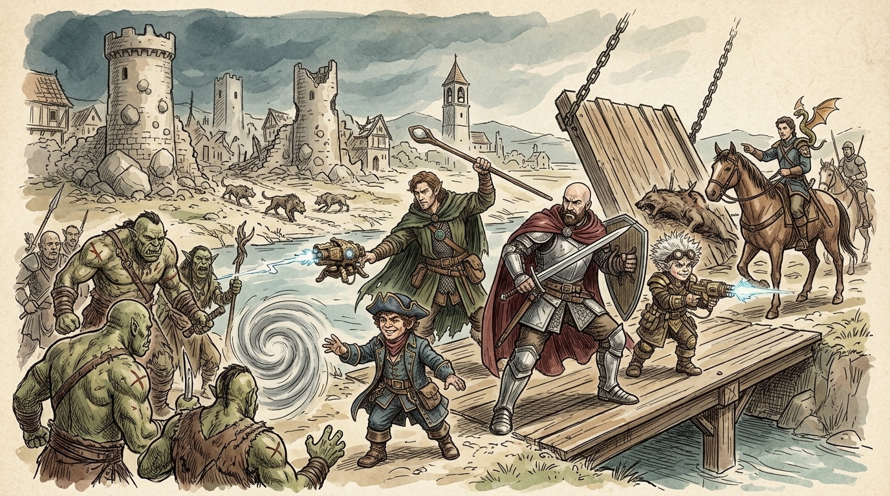
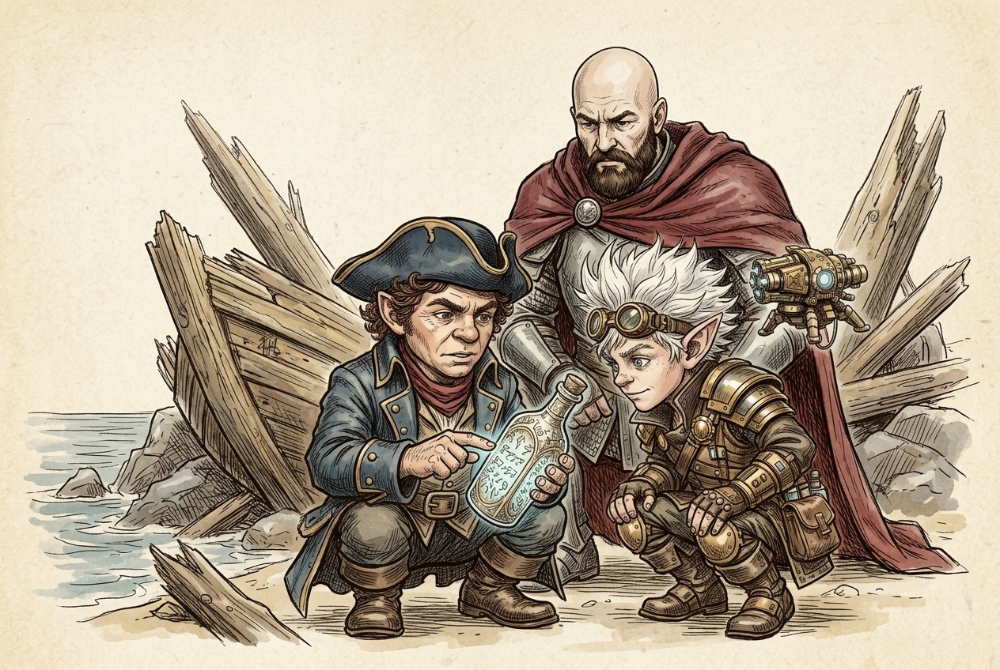
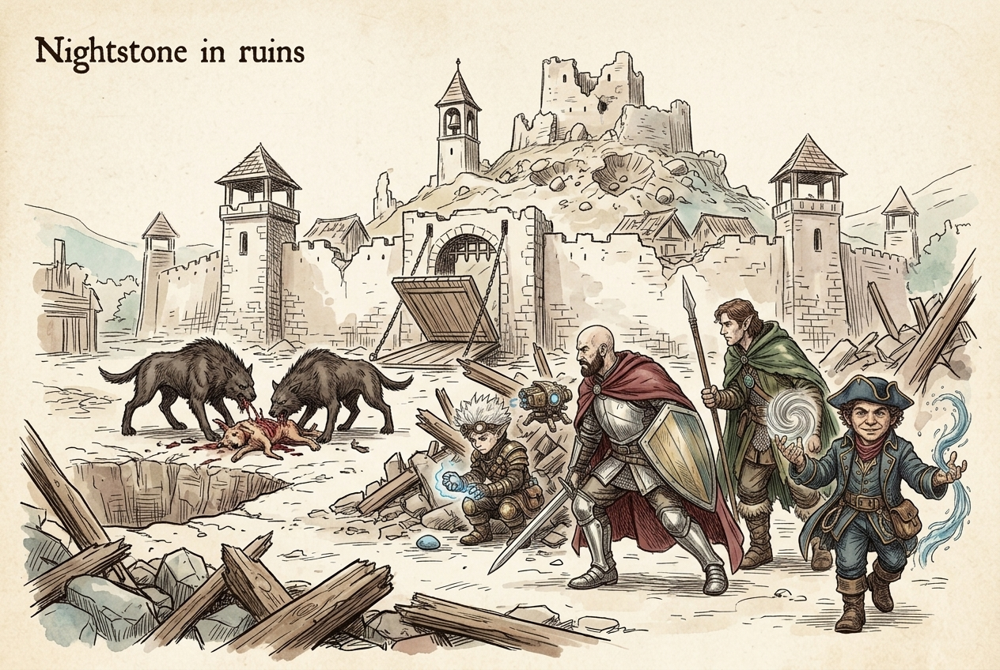
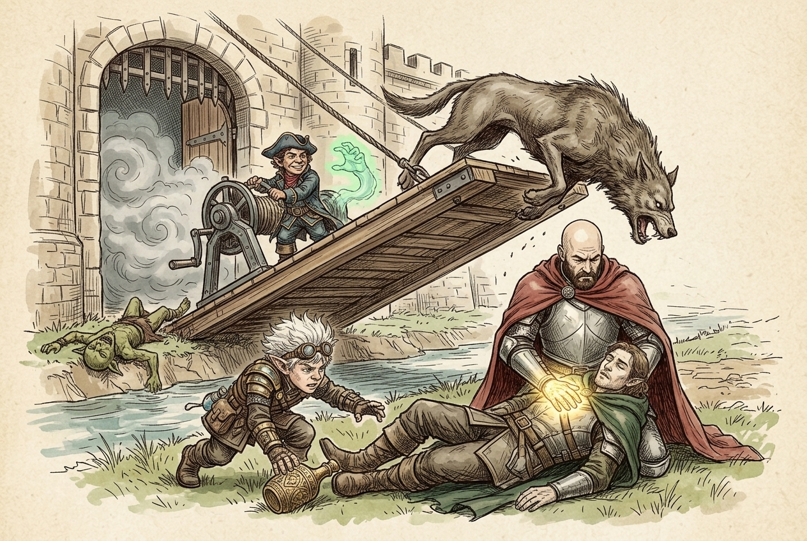
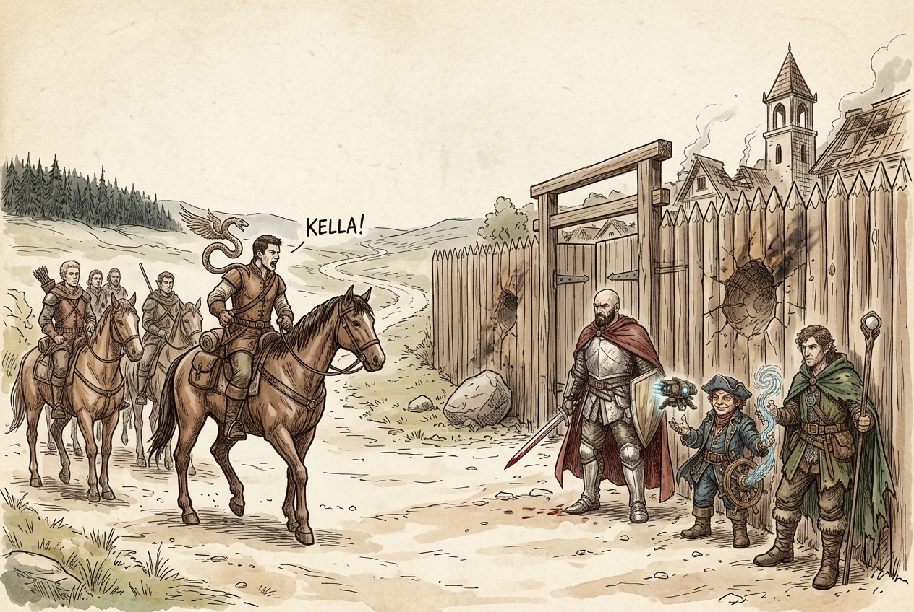
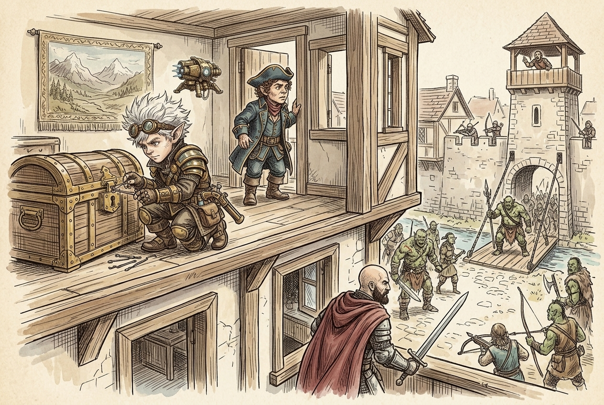

Session 2025-09-23

In brief: The wrecked crew of the True Hand stagger inland to Nightstone, find it overrun by goblins and dire wolves, and end up defending the ruined village alongside a party of adventurers hunting a missing woman named Kella.
A bottle from the wreck

The session opened with introductions and a look back at the crew's arrival on this coast. Their ship, the True Hand, had been battered to splinters by giant-flung boulders off the shore south of Nightstone. Four of the crew survived the wreck alongside the party — Ol' Rourke the navigator, Fish Hook Finn the deckhand, Liera of the Pearl Isles who kept the galley, and Garret "Ox" Dorn. From the wreckage the crew pulled an ornate bottle etched in Primordial. Toz, who speaks the tongue, read the inscription aloud: "To speak my name is to unmake chains." The bottle had a delivery attached to it — a fat fee promised by a well-known retired adventurer named Molak, who ran the Nightstone Inn in a small ritzy village at the edge of Ardeep Forest.
On the road inland, two goblins stepped out of the brush demanding a toll. Fiz put one down in a single burst of fire — a killing that seemed to unsettle him afterward. The party walked on.
Nightstone in ruins

By the time they came within sight of Nightstone, a bell was pealing without pause somewhere in the village. The drawbridge lay open, the watchtowers stood empty, and boulder-craters pocked the keep-mound at the river's centre — the same kind of damage that had wrecked their ship. Tracks around the gate showed goblinoid feet and the pads of some outsized wolf. In the courtyard, two hulking wolf-things — later reckoned wargs — were tearing apart a dog beside a fresh pit.
Fiz used Magical Tinkering to record a six-second message on a pebble — if you need help, stop ringing the bell for one minute — and floated it up into the tower with Mage Hand. The bell stopped for exactly a minute, then started again. Under cover of the noise the crew ran the group-stealth gauntlet past the wargs and into the temple.
The temple and the flight

Inside they found no beleaguered villager but two goblins — one gleefully swinging from the bell rope, the other turning Fiz's rock over in confusion. They killed both. Peeking back out, they found the wargs had wandered off the corpse and were sniffing along the gate. Woz threw down a Fog Cloud to cover the retreat. It fooled the beasts only briefly. One caught the party's scent at the drawbridge and charged, and the fight that followed nearly ended the campaign in its first hour — Woz was downed, Hal swam the moat and reached him with Lay on Hands, and someone made a serious lunge for the bottle, ready to speak the unknown name and unmake whatever chains held whatever was inside. Toz worked one of the tower winches with Mage Hand and cranked the drawbridge up mid-fight, stranding the warg on the timber. It toppled dead down the ramp; the bridge slammed shut behind them.
A second party arrives

As the crew caught their breath outside the wall, riders came up the road — a company of adventurers on horseback, led by a man with a small winged snake circling his shoulder. He called out a woman's name — Kayla! Kella! — thinking she was the one who had been ringing the bell. He was hunting a blonde Zhentarim agent named Kella, believed hidden somewhere in Nightstone or a cave in the Ardeep beyond. The two parties threw in together, dropped the drawbridge, and swept the village room by room, killing every goblin they found. The old woman with the bread survived. The townsfolk did not appear to be here at all.
Molak's inn — and orcs at the gate

They pushed into the Nightstone Inn. A goblin lay dead over a table with a crossbow bolt in its chest; another rummaged in the kitchen and was quickly finished. Upstairs, in what looked like Molak's private quarters, they found a tapestry of a mountain landscape and a heavy wooden chest — Fiz set to work on the lock. Before it opened, the shout went up from the watchtowers. An orc warband, twenty strong and led by a huge, badly wounded brute with a shaman at his side, was massing at the drawbridge. The crew and the riders took to the walls and fought them off.
What's next
- Find Molak himself — alive, dead, or fled — and hand over the bottle he paid for.
- Open the chest in his quarters and decide what to do with his tapestry.
- Follow Kella's trail into Ardeep Forest, toward the cave the rider's captain believes she was taken to.
- Work out who is throwing boulders at ships and villages both, and why goblins, wargs, and a battered orc warband are converging on Nightstone at the same time.
- Learn the name in the bottle before someone under pressure speaks it blind.
Original session notes (Fiz's POV)
In Nightstone, a village near Ardeep forest. Ardeep is a popular place for nobles to hunt. Meet Molak, we’re delivering a bottle to him, he runs the inn, knows a lot about local happenings
Flashback Our ship has wrecked off the coast near Nightstone
Survivors: Ol' Rourke (navigator), Fish Hook Finn (deck hand), Liera (of the Pearl Isles, cook), Garret “Ox” Dorn (sailor)
We salvage an ornate bottle, writing on it in exotic language, primordial, “To speak my name is to unmake chains”
On the trail to Nightstone we meet two goblins charging a toll, kill them
Back to present Village of Nightstone is ruined, drawbridge down, huge wolves in courtyard devouring a dog, go up watch tower, bell ringing in temple, send msg to bell tower (use artificer magical tinkering to write on rock, then use mage hand to drop rock down tower) to stop ringing if they need help, ringing stops
Sneak into temple, two goblins in bell tower, kill goblins, try to sneak out of village, wolves see us, kill them
Raw transcript (625 chunks of auto-transcribed audio)
Lightly chunked. Expect overlap with table chatter.
Al Stormguard. He's a variant human palliative. The soldier background, his alignment is lawfully neutral. He's age 42. He's bald with white skin, with brown eyes, 5'8", 180 pounds. He's 42?
Would you say his name is Hallux? Ha- Um, yeah, so he was born in the... In a small border town with the silver marches near Evermore. He grew up amid the constant flicker of trouble and defense. As a young man, he enlisted in the town militia, raising quickly through the ranks with a blend of discipline and a penchant for direct earthly humor that made him both approachable and respected. He found purpose and camaraderie among his fellow soldiers.
People of all races and backgrounds who shared a commitment to protecting the innocent no matter their differences. During his service, he witnessed firsthand the hardships of ordinary folk faced with monstrous threats. Raids, giants, and unpredictable fury of the untamed north. The passing of an old friend of a superior officer whom he deeply admired. It's the Hattie's guest in Mordor 11. All lowercase.
Yeah. Go ahead. bruised but not broken by years of conflict. Just like you. Exactly. So you're not the stealth guy?
Definitely not. I'm not the stealth guy, I'm not the smart guy. Okay. Did you say it's Armenduri's guest? The Wi-Fi? At ease.
At ease guests. Is anyone's intelligence above 10? My intelligence is 17. Oh wow. Well look at you. Thanks Alex.
Let's come up with one or two background ties that you have to other people in the party. How is the rest of the party together? We can give a brief intro of ourselves, I guess. Yeah, sounds good. Okay, so my character is a Taslow Greenbottle, a halfling sorcerer, 60 years old. And he's proficient really in wind and water related spellcasting is kind of his niche.
which is, uh, storm sorcery is the sorcerer's origin. Anyway, the, uh, he's from the Greenbottle family, a well-known family in Athkatla, the city of Coyne. Uh, he's brothers by adoption with Waz, another character here, him. Um, after serving on sailing vessels run by his family since he was a child, he finally became a captain, and his family helped finance his first ship, the True Hand, which came to an untimely end just 11 months after its maiden voyage. He uses wind and water, and he's begun to learn stronger magics through practice and interactions with other magic users on his travels. He was delighted his brother Waz decided to join the crew after Waz spent a long time away doing other things, which he will describe now.
Yeah, so my character's full name is Eneral Waz, but he goes by Inuwaaz or Was. So he's a half-elf cleric. Kind of back story is like he's a... was originally like a trapper, like a wilderness kind of outdoorsy person, and kind of came across... came into the whole idea of the clericness. I forget the person's name, but I'll just read it I guess.
Actually, I lost track. Basically, Polar of Eldath. And, yeah. That's it. My guy's name is HisFizz. It goes by Fizz.
SpinFizzler. He is a rock gnome artificer. He is from the of Haurua, which is like in the far south, I think, of the geography of this world we're in, which is like a technocracy. They're very technical people. Artificers are like, they build machines and tinker. Yeah, that's sort of how they use magic is through its devices.
They agree. But he wanted to go outside exploring, which isn't really, it's not a trait, it's sort of a hobbit thing from lord of the rings like they don't they don't go adventuring but he had this he had an aunt who left um how to go sightseeing she was an outlier and he always admired her and wanted to follow in her footsteps she left and nobody ever heard from her again so he doesn't know who she is he sort of has a goal to try to find her And, let's see, he stole a flying ship as a way to leave, because they had flying ships there, but crashed outside Harua. In his travels, at some point, he met up with Waz and Paz and joined the crew of their ship, because, you know, they were traveling around. He thought it was a good way to, like, see a lot of places. And here we are. I don't know if we've established how long he's been with the crew, but maybe not.
Well, he joined 11 months ago, so... So probably less than that. I don't know, maybe we met on the road somewhere. You're like, hey, I'm going to my brother's ship. Works for me. Works for everybody else.
Sure. Yeah. So let's give you a tide of someone else predating the ship. So, maybe it's possible you traveled to Halrua? Would they let in non-gnomes? I feel like they're kind of insular, but because they're sort of so far away from other cities.
I don't know. I could say that. It's possible we met at some point. Your travels on the road as a soldier? Or one of these guys? either like Green Bottle Company or Outlander shit?
I said you're a paladin. You're a paladin? Paladin? Whatever. Paladin? Paladin.
But a soldier, so kind of like a... That's a paladin. Paladin? Is that... Paladins, they choose their... different types of paladins, right?
Yeah, it's based around an oath. But I think you take your oath at level 3. Is that similar to Clerics, where there's the, like, your oath is to, like, your deity type thing? It can be, but it doesn't have to be. Like, you can swear, like, an oath of vengeance, and then as long as you, like, pursue your vengeance, your power is powered by your oath. be like otherworldly beings that are like yeah that's a sick oath I'm gonna power this guy up but it's not like it's not the same as like a cleric's relationship with a deity gotcha a personal relationship yeah I mean it's up to you I guess but yeah if you maybe you went adventuring and came to hell Does that work?
Yeah, that sounds good. You guys have been pen pals all these years? Yeah, that sounds good. Maybe you were like the spark that like, like, steal my resolve to go leave, and then we both stole the trip. Oh, there we go. You gave him all your stories of travel on the road, and showing how to gamble a little bit.
Played some cards. Oh, maybe he's in my debt. Played some cards, and he lost them. Yeah, that sounds good. I'm way more intelligent than you. Sounds like you owe him money and that's why you're doing that.
Right, exactly. But I'm not super wise. Maybe you're wiser. How about you? No, you're not wiser. Does anybody have a strong charisma?
I do. How about somehow we met and you wanted to go adventuring and you know that you would fare better if you had a tank with you. Yeah, definitely. I'm a bit squishy. Alright, cool. So you guys have kind of been together for a long time then.
Yeah, cool. Love that. So the ship is totally wrecked. Oh, it's wrecked. Okay. Yeah, it giants through boulders at it until it's split apart.
Oh, for fun. For fun, yeah. And from there it was all we. Okay, so we can jump in now. There was one thing that happened last time that I had second thoughts about. I don't know.
It was pretty much like the ease with which I just destroyed that goblin. I think maybe it was a little shocking to Fizz. Maybe he hadn't done a lot of combat. Oh, okay. And so he saw that and I don't know. Like the emotion, right?
He just didn't feel anything? It's not like he's a psychopath. Yeah. I'm going to fucking torch this goblin. He didn't feel anything. Or maybe he called it.
Maybe he called it. Maybe he called it. Maybe he called it. Good. I'm glad you're experiencing empathy. Yeah.
If that's what it is. What do you call it? Extra of shock. Yeah. Roll for empathy. Yeah.
Okay. What do I do again? I'm starting on a lot of information and nothing's coming. Do you want to recap everything? everything? Well, that was all just sort of filler.
Well, there's the whole fucking genie lamp. First sit down we got a genie lamp. We're walking around with a nuclear bomb. Yeah, basically. You guys got a genie lamp? Yeah, so the reason they're going to Nightstone is to make this like special delivery to...
Okay, so Nightstone is... One of us speaks Primordial, right? I do. And so the label on the bottle was in Primordial, right? Yeah, yeah, and someone in the party speaks that language, so they were able to read it. So everything just came unraveling.
Much to God's chagrin. Oh wait, it wasn't Primordial, actually. Yeah, so they are delivering this bottle for kind of a high delivery fee to this like he's sort of a well-known adventurer who's retired in this town of nightstone and nightstone where you guys are headed is this like you can think of it as like sort of resort towns or sort of like vale it's like rich people go there so that they can like hire adventuring parties to take them hunting in this expansive wood that's nearby but like the town itself is a little bit on the ritzy side and it's got this famous tavern known as the night stone inn where this like famous adventurer lives who you guys are supposed to bring this bottle okay and then on the way discovered that the bottle holds a genie which is like something you're really not supposed to have like if you guys you know if you got caught bringing this into a town it would be like a big deal because it that's like you said it's like a nuclear bomb or something Bad things are going to happen. Yeah. Yeah. Extreme events, bad or good, you don't know.
Okay. And we'll begin. I also need to say I haven't been running games a lot lately, so I'm going to be pretty out of practice. You guys are all new, so you won't notice. Yeah. So you don't need to say that.
Doing great, Nick. Thanks. No, I'm just, you know. I've already exceeded my expectations. Did you forget the smoke machine stuff? sorry i had to find i needed the 10 hour long bell video yes god damn it i don't need an ai platform you really do okay so you guys have been walking along basically along this river that's leading up the nightstone on this relatively gentle path.
You did encounter those goblins on the way but since then it's been you know a nice sort of spring afternoon. It's green and the birds are chirping. As after following the trail for 10 miles you hear the ringing of a bell. The sound grows louder as nightstone comes into view. A river flows around the settlement forming a moat. The village itself is contained within a wooden palisade beyond which you see a windmill, a tall steeple, and the high-pitched rooftops of several other buildings.
Apart from the ringing of a bell you detect no other activity in the village. The trail ends before a lower drawbridge that spans the moat. Beyond the drawbridge, two stone wash towers flank an open gap in the palisade. South of the village and surrounded by the river moat is a cone-shaped flat-topped hill on which stands a steep a stone keep enclosed by wooden wall. The keep which overlooks the village has partially collapsed. A wooden bridge that once connected the keep to the village has also partially collapsed.
So just to help illustrate what that looks like. So there's this river you've been following. It forms a moat around the town which is sort of like two islands and there's a bridge that connects these two but it is uh used to be yeah it's destroyed there's this big like castle keep on this huge mound in the river but that looks also smashed to bits and there's a drawbridge here which is open and two empty watchtowers flank it on each side and then the town is surrounded by this like big wall and this keep is like up on this really steep mound um You say the watchtowers are empty. How do we know that? Well, you don't see anyone there. Oh, okay.
You would sort of expect when you enter a village like this, the watchtowers at the gate, there would usually be people, like the way these watchtowers are, they're situated that some archer or some watchman would be on top, and you don't see anyone. This is the town where you expect to be this fancy town. Yeah, nice town. Yes. yeah and you can see signs of other damage it all looks fresh how about make a perception check that one well it's hard to tell anyway and then as you approach the drawbridge you also see that there are some tracks on the ground. What kind of tracks?
Make a survival check. Oh there it is, wisdom. 16. So you can see that there are many tracks of many people, some going out of to the north and some going into the village. You say to the north. Which way is north on here?
Uh, that way. Okay. So like the way you guys were walking north. Yeah. So you guys came up this path. And here's where you are.
And then you see some footprints lead north out of town. But you see there's other different footprints that lead into the village as well. They all look roughly humanoid footprints. Um, from what you can tell, it's, well, you can't tell precisely with a 16. If anyone else wants to check it out, use their survival skills for identifying footprints. is that another one no it's a three so that's right yeah you might as well 14 plus 18 18 okay so um so it's a 13th you're able to get a little bit more out of the tracks it looks like which are that you can tell that the tracks leaving are of humans um or humanoid creatures with like footprints and things like that but they all appear to be hurried like you by the gate of the footstep and everything that these people are leaving in a hurry.
And then you see there are other footprints on top of those that came later, which are from some sort of goblinoid creature. And there are also heavy footpads of some sort of extra-large wolf-like creature going into the village. The footprints leading off to the north. Are they on a path or are they just sort of scattering into the woods? They are on a path that leads up towards the woods. So you said this is the entrance right here?
Yeah, so there's a drawbridge, which, you know, another unusual thing is that the drawbridge is open. So no tower, no guard tower people, and the drawbridge is open. Yeah, and there's this constant bell ringing. Aside from the bell, can we hear anything else? No, actually the bell is very loud and it's like deafening. So the sound of the bell is just kind of like covering up any other sound.
We can't see the source, where the bell is right now. You can see there's a church tower. There's a church with a steeple like pretty much right inside the village. You'd have to go inside to see more. But you can see that that is where the bell is ringing, where the sound is coming from. Oh, this seems ominous.
Yeah. Sounds like a trap. Or something's in the middle of going on. Do we know of any enemies of this town historically? Like, who would do this? Roll a history check.
You said it. Eight. Eight. You don't know. The woods. You guys have been out on the sea for a long time.
You don't really have a lot of news of what's going on lately in this part of the world. You mentioned that there's hunting grounds. Is it north in the direction of the... Yes. So there's the forest is the north direction. Because I think you mentioned that this nightstone is kind of a destination for nobles to go out hunting in the forest.
Yes, exactly. Like little higher adventurers and stuff like that. So what do you guys do? Well, we're supposed to deliver to someone here. We need to investigate and figure out where they went, right? All right, boss.
I guess we go in cautiously. Send the tank in first. Who's the tank? Which one's there? Cast all my buffs. Okay, so you guys cross the drawbridge?
Cautiously? Yeah. Maybe I'll send the noisy guy. You cross the drawbridge. There's two watchtowers to either side, and there's an entrance just as you pass through. To the watchtower?
Yeah, the watchtower's on either side of the drawbridge. So you go ahead and get a bird's eye view in this place. I think only one or two of us should go up there, not all of us. Maybe someone should guard the entrance. Once you're in the watchtower, you notice there is a wench with a mechanism for opening and closing the gate. When you climb up to the top, you can see out into the square.
And in the square of the village, there's all of these, like, just big boulders sitting there. There's a big five-foot-deep pit in the middle of the square. And just before the pit, you see two huge wolf-like creatures devouring some kind of dog or, yeah, basically devouring a dog. And their faces are just buried in this dog, and they're just going ham, just eating it. How far are the wolves from us right now? The wolves would be...
Are these like animals or monsters? Make a perception check. You stare at these. Ten. Ten. They look odd.
10 feet, so you guys are at the gate. About 100 feet from the opening of the drawbridge. Those rocks remind me of something that happened to our ship. There were giants that came through here. Looking around more, so like just to give you a look, I'll just show you the map. So here's the map.
Immediately to your left, that's where the temple is. This square here is where you saw those two wolf-like creatures. Then you also see there's a farm that the house of the farm is completely smashed by a huge boulder And then you know you can see out like the tops of the roofs of other parts of the village But you can't really make out what's there and you don't see any villagers or anything You know, it's unusually quiet in this And then you can see over to the keep You can see the bridge is completely destroyed through and the keep is pretty smashed up Is the wall around the town completely intact or are there places where boulders have smashed into it? Um, good question. So, the wall is mostly intact, except you do notice that on the northern side of the wall, there is an opening that has been smashed by a boulder. So, you mentioned that there were tracks where people left.
They left before all the stuff came in, because they're not there anymore. So I wonder, there could be people in the north, in the woods or something, hiding. We're still out here, right? Do you know what's north of this town? Or up in this tower? You guys know that the Ardip Forest is north of here.
Maybe you can roll history, if you want to see if you know more about this area. Just to be clear, there's no way that we can cross here to get into the... I mean, it's just water. I can't tell you can't cross it. Oh, okay. Probably not in whatever armor you're on.
Right, who's not wearing armor? Can we see the... But you can see the water is fairly deep. Can we see any of the surrounding area beyond this map? So looking out, so it's like, you know, this grassy area surrounding the village, to the north is woods, you don't see anything else noteworthy. Should we go explore the woods?
These are wolves in danger. Yeah. I don't know if you want to tangle with them. My only concern is the bell. What if someone is in there ringing for help? Is there the building with the bell in it?
Like, what is our path to get there? If we were to take a... It looks like it's really just a few steps from the entrance, but you would be kind of running out in the open. By a few steps, it's like 30 feet. Sorry. There's no, like, back entrance to this building where we can just kind of sneak around along the wall?
You can attempt to sneak. It's a little bit hard because you would be kind of out in the open, but it's not impossible. Is it possible to walk on top of the wall or no? No, it's like a wooden balisade. You know, the things are hard for all the points. It's not meant for walking on.
Can message be used on a target that I can't see? I don't know. What is a message? It's a spell, a cantrip I have, where I can send a basically telepathic message to it. Point your finger toward a creature within range and whisper a message. The target, and only the target hears the message and can reply in a whisper that only you can hear.
you can cast a spell through solid objects if you are familiar with the target and know it is beyond the barrier so no you don't see them and it can pass through walls and stuff as long as you know them but if you have to bend your right no I have a thing where I can imbue an object with a message but also one foot of stone one inch of common metal a thin sheet of lead or three feet of blocks the spell. So it's like not true or anything. The person who is in the bell tower may be relatively exposed. Usually they're kind of open, right? The bell is sitting there. And there's...
Maybe all the way down the bottom, I think. That was a good point. Sounds like there's somebody in there. How far is it? To the entrance of the temple? To the tower, I guess.
Or the bell tower from where we are. Like, 30 feet? I don't know how they're going to give a message back. That's the problem. Could I record a message of me? And then basically they'll know me after they've heard my message?
Like if I introduce myself. I don't know what "no" means in this context. But we can also tell them just to stop ringing the bell. Are you just yelling at them? So I have an animal friendship. They are beasts, right?
The wolf, the mean. So they look kind of monstrous. So they look odd. They look odd. How about make a nature check to see if you can-- discern the nature of these creatures. Animal handling does not work on a monster track.
I mean, animal handling, it's not like a power, right? It's your skill with animals. It's friendship, not handling. Oh, he has a spell, animal friendship. That is specific to beasts. So just make a nature check.
Roll a d20. You've seen the wolves. Peaked at them. Four. They look beastly, ew. I don't know, speak with him.
How about We can try and yell, but then it might attract the wolf's attention. What if we do put a message on the pebble saying we're here to rescue you, please stop ringing for one minute and ring again if you receive this. Or just if you need help. I don't want to make any promises. How about that? We just stumbled into this situation.
That's true. And then we've got to figure out how to get it in there, though. We can try throwing it. We can try throwing it, which... How often can you do this? Is this like a once-a-day spell?
It just says... I can do it as many times... It doesn't have a cooldown. It doesn't look like it. I can just imbue up to three objects at a time. When I do it again, the oldest object loses whatever.
So the way I'm reading it, there's no three times a day. Is it obvious that it's been imbued? Do you like throw a pebble in and just miss it? Well, it'll just repeat the message. Oh, it'll actually be like... It'll be a six second message.
Interesting. Are you getting faster spell? Or actually it says... What's the range of the spell? Actually, I take it back. It says whenever tapped by a creature the object admits a recorded message that can be heard.
uh why didn't it say oh wait it says range area take a rock no no no just right i clicked the wrong one sorry yeah 30 feet you can do that 30 feet so you'd have to go like us pretty much halfway to the the creatures too that's all i have gus and maybe i can levitate the rock like into the oh oh i have major how far does that go very convoluted solution for you here. It says 30 feet. 30 feet? 30 feet? Did you say meters or feet? I said feet.
Okay. So we take a rock and I imbue it with this, um, what do they call it? Magical tinkering. We record a six second long message saying, "If you need help, stop ringing the bell for one minute." and then we right on the rock, tap me, and then I use Mage Hand to drop it down the bell tower? Yeah, I guess go up to the bell tower and drop it, I guess, inside. So rock goes into the bell tower, there's a rope leading down from the bell.
Does it clink off of the bell? You can't really see from here. You can't... It's a normal bell tower and someone's pulling a rope on it. I'll say you can see that there's an opening and you can see part of the bell. Okay, so I move it so it's underneath the bell with Mage Hand and then let it go.
Okay. Is that legit? Yeah. It's actually Mage Yan for me manifests as a little clockwork bird that I just rock through and it flies over there. So, okay, what does the message say again? The recorded message?
Yeah. That's, if you need help, stop ringing the bell for one minute. Okay. Is that what we want? Is that the right message? We don't know if this person is...
the idea yeah yeah well we don't know if this person's hostile or not wait i thought you did it we we did it okay okay so the bell stops ringing okay for exactly a minute we're about to count to 60. and then it starts again oh okay we didn't knock him out with the rock all right or we just killed whatever it was all right still may be a trap but there's definitely in there. Someone's in there. Yeah. So, do we want to try and sneak past these wolfish creatures, or do we want to just take them on? We could try to gain some more information.
I have defined sense. We've already proof of concept, our communication method, our one way. We'll detect good and evil, first in this case, to bond those weird animals. To do what? Defined sense. Defined sense.
I don't know what that is. As an action, you can detect good and evil until the end of your turn you can sense anything affected by the hallow spell or known to know the location of any celestial fiend undead within 60 feet that is not being total not that is not behind total cover sounds like that's more about combat is it how what's the range of that 60 feet 60 feet so you'd have to get about 40 feet closer meaning in order to use that could like oh on these creatures on the screen oh they're that far yeah they're a hundred feet oh yeah okay you said they're busy consuming it yeah they are like face down so they are completely distracted at the moment all right who's our sneakiest person I mean I mean still this is just plus one also it's difficult to hear anything because the ring well I guess actually I do it I think that makes sense I think it's the wrong the bells are kind of providing a cover for us. Yeah? At least in terms of sound. We can at least get to 60 feet. Yeah, do they have line of sight to both of these?
The doorway to this tower we're in? The wolves? Do they have line of sight to the entrance of the temple? Yes. And to the tower we're in? Yes.
Yeah, they have line of sight to the temple. So they're looking kind of at us, but they're just busy eating. Oh, when you say line of sight, are they looking there now? No, but If they looked there, they could see it. Yeah, because they're just standing out in the open. Okay.
Yeah. So if we want to try to sneak, can I ready a spell? And that way, if they see us, I can try to cast the Animal Friendship. Yeah. Yeah, let's do that. Let's try to sneak then.
All right. So what we're going to do is going to be a group stealth check. So you'll all roll. And because of the bells, you have advantage. So everyone roll twice and tell me your highest point. So, D20 or what?
Yeah, D20. Plus your stealth bonus. Which is just plus dex if you're not efficient in stealth. E better than 10. 9, not better than 10. 22.
22. 17. 17. 10. 10 and... So, wait, I'm sorry.
So you roll it and then you add the... What? Your stealth modifier. So plus 3. Yeah, you guys are good though. So with a group stealth check, I'm looking for 2 successes.
I don't know, Alex. So at least half of you succeed, then the group succeeds. Okay. Yeah. He might have disadvantage? Well, it negates it.
But you guys got two successes anyway. So as a group, you guys scurry across the campus into this tower or this temple. And you see... As you step inside, the thunderous peal of a bell shakes the chamber, its clangor echoing off the high vaulted ceilings until the very walls seem to tremble. Colored light from tall stained glass windows shatters across the dirt floor and the plain benches underneath them. But the noise drowns out all sense of peace.
The sound hammers through the air, pouring from a half-open door in the western wall. So you guys step in, basically like imagine a church with tall ceilings, high stained glass windows that depict sunrises. And, you know, the rows of pews, there's an altar at the front. And then there's a door in the back that's slightly open. You can kind of figure out from the structure of the building that that room is where the bell tower is. Does the church look in good shape, damaged?
It's in good shape. You see some things are knocked over and look rummaged through. There's a little table, and you see little doors of it are open, and all the stuff is spilled out. But nothing's really damaged or broken. There's no boulders that damage this building. How far away is the door?
20 feet. We can't see inside it? No, you just see that it's cracked open. Do you have a deity? Oh, I do not. A deity?
Deity? Deity. I do. Not right now. Like, all these temples are, like, too certain. Consider the Church of Bahamut.
Of what? Bahamut? Do we know what's a cool god? Yeah, do we know what? He's the good dragon god. Is there a religion or a god this temple?
Make a religion check. Make a religion check, brah. That's a pretty good value. 11. 11. Nothing.
I got a 2. That's the wrong die, though. That's a D12. You've been using that the whole time? I got a super disadvantage. I got a 10.
15. 15. I have 2. Okay, so... Taz. recognizes the symbols of so mainly the church is of the morning lord Lathander who's like a very very popular like god of like birth and healing and of light and of the morning but there's also um peculiarly you look peculiarly uh some symbols of the god mia leaky strewn about which is like stands in contrast because mia leaky is like a nature god but you see both gods are pretty much celebrated in this church all right i said let's go find our bell ringer yeah should we try to peek in It's already open, right?
It's just open a crack. So we could look in through the crack? Okay, make a stealth check. With advantage. 18. Okay, so when you peek in the door, you see there a small goblin holding the rock that that you sent in and he's like shaking it, hitting it, like, you know, really just like focused on and perplexed by this rock.
You glance up at the bell and you see there's another goblin just gleefully swinging from the rope. - All right, it's goblins guys. Two goblins. - Here I go killing again. - Sweet. over the last one.
How high up is the swinging goblin? How high is the bell tower? I don't know, 30 feet? 30 feet? 30 feet, and so it's hanging below it? Oh, it's like up out.
How far? It's like just beneath the bell. So say it's like 25 feet up. Okay. There's a ladder that runs along the wall, and also you can see this room appears to be like somebody's bedroom, and the personal effects of whoever's room this is are just thrown all about. So if we engage these guys and then the bell stops ringing, is that going to alert the beasts outside?
Would it be easier to... I can't tell you what will happen. I'm floating the information out loud and staring at you, but it's from the table. Is this a bad idea? There's no bad ideas. Well, it's not for a minute.
Nothing bad's gonna happen. Well, nothing happened when the bell stopped. Because we had an advantage on it. Yeah, nothing like, no dramatic change happened. The wargs, the wolves didn't notice. What was it?
Just to be clear, this is where we're bringing the genie out? Yeah, yeah. So there's an inn here. There's clearly something messed it up. Guys, I don't think this guy's here, though. What if we just backed away?
How far away? Where's the inn? respect to where we are. Are we looking for trouble here? It was a little deeper in the town, across the town square. So right now we have a we have cover.
We have audible cover. Yeah. I'm wondering whether we should kill these guys. Oh well okay. Or maybe sneak around or... but what are we...
So what are they... Our goal is to deliver this bottle. Right. But we don't know if the person that we would need to deliver the bottle is here. There's a lot of evidence. And he's probably not going to be here while these guys are here.
I would say we should do a quick search of the not the room they're in, but the general church. The church. And if that comes up empty, we should bail and make our way north. Try to find some people. Yeah. All right.
Unless you're feeling especially hardy today. You've taken down two warg wolves. No one said wargs. No one says warg wolves. I know, except they're warped. Those huge wolves out there.
Yeah. I am going to cast Animal Friendship out of them. Sounds good to me. I'll watch the door while you guys look around. All right. What do I do for, like, investigation?
I guess I'm going to be-- I'm searching the church area. Oh, you're searching the church area. OK, make a stealth check. OK. With advantage. 16, 21.
Okay, and now make the investigation check. It's 15. 15, okay, so you kind of like go around, look at places. You see that there's like a little, like a cutaway piece of the altar, and you pull on it and you find a little stash in there. and you find there's a fine but used pipe and a packet of tobacco and the the bag of tobacco has a symbol of a lion on it like there's like a seal on the bag brand lion or a seal a lion seal and there's uh 20 silver pieces in in this stash as well but uh it appears to be this is like the the priest's like secret tobacco stash um who's our history buff like who's got the best i got pretty good history plus three i hand you the pipe and i say what do you make of this Let's do a look at the pipe. We get a 12.
12. You can see it's a fine handcrafted pipe, and the symbol is the lion's share mercantile group, which is sort of like a well-known mercantile group that has trade goods. and has a store here in Nightstove. So this person probably bought it from? Yeah. Okay.
All right. Are we sneaking out of here? I feel like we should. With anyone who checks. Do you want to cast something? Well, Animal Friendship, that was the backup plan in case we have a region or anything.
I had to get closer. How far away are we? We can still do it with the sneak thing. If the sneak fails, then we can still cast it. You're still in the temple. How far away is that from the...
30 feet. So the animal thing is, we're like here, I think? So yeah, we're like 100 feet from the gate. So like... I don't know. 70 feet where they were last for when you guys...
I say we sneak out of here. Yeah. Okay, when you peek out of the temple door, you can see that the wolves are no longer engorging themselves on this dog. They are now freely wandering around the square, just sort of sniffing around for things. You can see them more clearly now, and you can see that these are way bigger than normal wolves, and their faces are like grotesquely human. So now...
These. These. So now we gotta kill them. Because they're ugly. So just to like... Do you want another one of these?
Yeah. I guess I didn't need to erase that. Well, now you guys can't see anything. They're on the board. - I've forgotten everything. - So here's the temple door.
Here's where you guys came in. You can see one of the wolves is positioned himself there and another one's just kind of out here in the open. - And say like-- - Is there a check you can do to hear what these things are? - That was the nature check that you made. This isn't to scale, but I don't know. That's why I'm asking.
Yes, you rolled a nature check. You didn't check. If anyone else wants to try. They look weird. I'm not going to make a pelt out of them. To try what?
To see if you know the nature of these things with a nature check. I would also give you arcana. Oh, really? I don't know. I'm great at art. Not today.
11. That's enough to know that they're not beasts. Maybe know clearly what they are, but they're, you know, you can see like the monstrous faces. So I'm going to save that. It's not something that's natural. They're not natural.
It's not natural. I'm not natural. So I have fog cloud at our disposal if we want to make a sneaky exit from here, or we could choose to engage. So what do we feel like? If you can't decide, you can just put it to a dice roll. I'm on the side of sneaking out.
I have to look up the description. I don't know how big fog cloud is or anything. It's a 20-foot radius, so 40 feet across. That's big enough. So these are... So we can cast it like on...
It's like 30 feet to the gate. But we can probably cast it here and hit both of them. Yeah, they'd both be on the edge of it. Yeah, just high-tier it out. That'll work. Does that affect us as well?
Anyone in it is blind, basically. It's just like a thick, opaque cloud of fog. I think we can go like this. Anyone who's in it effectively has a blinded condition. We can just... There's the gate.
Throw the cloud. Right, exactly. That's a good call. Sure. Okay, I cast a Fod Cloud at, like, a point here where it's going to hit them, but give us a clear path to the exit. Okay.
So they both become, like, effectively blinded. Like, you're passing this so they're in it. They're both in it? Yeah, they're both in it. Okay. Now, everyone roll initiative.
God damn it. Well, this doesn't necessarily mean you're detected. It just means that now we're going to do things in initiative order. Because, uh... What is this? What is this?
Something's... God damn it, Alex. Come on. So you have an initiative plus zero? So you got a five. I'm at ten.
So that just determines the order in which we do things. Did anyone get a 20 or higher? I got a 7. Did anyone get 15 through 20? Apparently 10 is the highest. 10 through 15.
10 is the highest? Okay. I rolled a 1. 10 is... Okay. I'm really good at this because I've practiced a lot lately.
What did you see initiative again? Taz got 10. Who got the next highest? Oh, okay. So that's what you got. What's that?
Who got next highest to 10? I got 7. 7. What did you get? I got one. I got one.
10, 7, 5. One total? Plus zero? You have a plus zero on initiative? No. I think it's 3, plus 3, so 4 I guess.
I rolled a 1. 4. 10, 7, 5, 4. 10, 7, 5. Is initiative bonus static also? They're reacting.
It's your dexterity. So whatever your dexterity bonus is, is also your initiative bonus. Unless some things grant you additional bonus to initiative. Oh, I can also use this magical tapering to just put text on the thing. But I guess we can also just write on rocks. you could have just written up the goblin is illiterate apparently seven was fizz five was hell and then what is your dexterity bonus for, you know, Dexterity, then three.
Oh, and what is Hal's? Zero. For Dexterity. Okay. So first is going to be Taz. Okay.
So I didn't notice anything happen before my... So you cast the spell. We're going to say that like happened already. Okay. And so now the two wolf creatures are completely hidden in the fog and there's a clear path to get out. So it's 30 feet to the exit from the temple door.
Okay. I make my way to the exit as fast as I can. Okay. So are you going to take a dash action? Twice you're walking. I'm gonna take a turn around does that ruin my stealthiness in anyway yeah so it'll cancel out the advantage on the self then I'll go normal speed my full movement speed that would guys 25 25 okay so you're like right outside the entrance right yeah inside I guess yeah okay next is fizz Same.
So I need to roll stealth? Yes. Did I have you roll stealth? You did not. Advantage on stealth? Yeah.
Yeah, you stealth advantage. 10 and 22. Advantage means you roll 12. Ooh, nap 20. Nice. Okay.
So you guys quickly and quietly make it right outside the entrance of the... I don't know what he did. Like, are we in the cloud? No, we're going around the clouds. Around the clouds. Creatures are in the clouds.
Fizz wants nothing to do with these things. He's using dash. He's getting 50 feet. So he's like-- OK. So yeah, 50 feet. He really wants to.
You're past the gate. You're across the drawbridge. You're on the other side. Yeah. All by yourself. All by yourself.
OK, so next is the wargs. and the wolves i didn't hear it yeah i'll take a guy that's a lion I guess these are not. These are... I can go by one. I don't want to do it guys. You probably have exactly what you need up there.
No, I have like this direction die. North, south, east, west kind of thing. Um, but... I mean, are we really being sticklers? Like the lions aren't gonna cut it? Like you guys don't really need to cut it?
Water? Oh, yeah. I think any quadruped would be good. Yeah, that's good. There you go. Perfect.
Here's how I'm going to do this. I think I might review them. I mean, if you dash... I thought you were saying, like, review of my DMing. You can take a review. I'm pretty sure the picture of this thing pops out, and then it's, like, supposed to be, like, bugging.
It does, but I don't need that. Make it even harder to reach. Yeah. Maybe there's, like, a screen or something? No. I don't know.
I don't know. Um, alright. So... There's like, colored lighting or something. I don't know. Is it similar to...
It's Senta. Let's hold up some Senta. I hesitate to touch the team really. So here's the... Or like, fill the room with like, stink gas. Here's the entrance.
Porch. Comes off the wall and everything. Temple. It seems like they should. No, no. I mean they have like every weapon over there which is kind of cool.
Okay, so we've got these guys here. This one? Hey! At least on the outside. Okay, um... These guys are each going to wander in a random direction, okay?
Okay. Let me get this right. So it's a 20-foot radius, so 5... Don't put me in... Oh, yeah. Just somewhere we're supposed to...
15, 20... You just get up to twice your moves. 15, 20, yep. So I would say I would go, like, just outside. game. I'm not trying to leave everybody behind.
No, you already did. Okay. But I am trying to not be seen by these things. There's a light in here, so it's like a regular plug-in. Yeah, there's a cold. So there's the fog cloud.
There's these guys. They are not particularly alarmed by the fog. They don't seem to mind it. but they're just gonna wander around aimlessly. And they're still blind? They're blind inside this, but like to them it just seems like a weather phenomenon.
This is the chapel? This is the drawbridge. This is the temple you're leaving from. So we would have... This is Hal. So you're still here.
You're on the drawbridge? Okay, so this is the mode. It wasn't perfect. And Taz is there. And Eno is still in the temple. Where's-- you got one for Eno?
The-- You have one? That's fine for now. I'll switch that one if I can. Okay, so here's what it's gonna be. One. Eight directions?
A little exaggerated, but I'm gonna go for it. I just discovered these today. One, two, three. All of the nerves. Five. That was nice.
Eight. I just made this. No. Eight. I'm gonna take a picture of this. This warg, at the end of his turn, he notices you guys.
It lets out a loud cry, but it's pretty muted by the ringing of the bells. Does it sound like a human? Okay, but that's the end of their turn. What does this cry sound like? Waaaaaaaaaaaaaaaaaaaaaaaaaaaaaaaaaaaaaaaaaaaaaaaaaaaaaaaaaaaaaaaaaaaaaaaaaaaaaaaaaaaaaaaaaaaaaaaaaaaaaaaaaaaaaaaa Your turn. Yeah.
Aim for the throw. The turn is yours. How long do we have this place, by the way? Eleven. Oh, okay. I'll make my way towards the exit.
Must be just thirty. Okay, so you can make it like all the way to the drawbridge. So they're at the drawbridge, and this thing you said can see them? Mm-hmm. So we're actually farther away from... Yeah.
Okay. You're gonna run the other way? It's not my turn yet, so... Yeah, now it's Hal. So there's a wall here, right? Somewhere?
Like here and here? Yeah, so... I made the temple a little too close on accident. We'll just say the temple door is like on this side. But yeah, there's like a guard tower here, and there, and... Oh, so he can't see us.
He can't see us? there. He's a boss, right? Yeah. At the moment, no. Well, we can't see him, but we just heard him go make the sound, right?
Right. So I'll use my turn. Can I not exit, but stop right here, just in case? Just to cover? Yeah. And you still have, like, an action.
If you want to ready an action, you can do that. What is the... So when you ready an action, you sort of name what is the triggering condition that will trigger the action. And then you will use your reaction during another creature's turn when that triggering condition occurs. So it might be like, if this creature runs at me, I will attack it. That's not your reaction, is it?
You use your reaction to use your ready action. So you wouldn't be able to also make an opportunity to attack. I'll ready my action with my longsword right here. Okay, so you move here. You get your longsword out. Good.
That's it? Yeah, unless you're going to do anything else. Did we notice him unsheathing his weapon and getting ready for something? Yeah. Because we don't know what's going on. He can talk to us, too.
Okay, and then Eno's turn. Yeah, I warn you guys. like they're one of them seasons? You're essentially the same thing. Ready, my fingers will be the quarter stat. And then run that way.
Or... Yeah, walk that way. Okay, so now we're back to the top. It's Taz. You gonna keep skedaddling? I think our...
how far to the forest? Um, what is wrong? You don't know. Neither do I. Was the winch to raise the bridge at the bottom or at the top of the tower? The bottom.
At the bottom of the tower. But then you'd be trapped inside yourself, right? Well, one person would be. Who has Featherfall? Do we have any scrolls or anything from the last? The word Mage Hand would have been cool.
We didn't use it to throw that rock. I can still use it. It's a cantrip. I can use it. Oh, it's a cantrip? Okay.
Well, Todd, your turn. I don't know if I can do anything more than, like... Yeah, just playing the seed. Okay, I'm going to continue to go across the bridge 25 feet. You can't attack, activate, magic items. The tiles are all 5 feet.
Yeah, I'm just thinking if I should dash, because now I know there's a guy there, but now I'm going to go regular speed. One, two, three, five. Okay. I could probably do it. That's a good idea. Okay.
Fizz, you're up. That's as far as we're going. Okay, yeah, I'll just move next to him. Or behind him. How about that? Right here?
Or there. I just want everybody to be able to get out so yeah for them it would be difficult terrain to move through someone's space but it costs you an extra 5 feet of movement to move through someone else's space difficult thing and I will ready an action based on this idea to send Mage Hand into the tower to lower the drop or whatever -Ravio. boost it up, but I don't know if it can. I'm trying it, we'll see if it works. To do what? No?
Sorry. To send my little birdie mage hand in there to... To activate the winch? To try to activate the winch. Okay, that's your action you're using for that, right? I'm readying it when they get out.
Didn't you already dash? Last turn. Okay, so you didn't use an action this turn. Okay, you're readying your action to fly your mage hand in to engage the winch. Yeah, once those guys are outside, then whatever. They're out of harm.
Which is what? Okay, yeah, that's totally cool. Okay, um... I'll try it. I don't know if this guy is... One of you speaks goblin, right?
Not me. I don't think so. Not me. I swear one of you spoke goblin. Which one is... Well, you hear some guttural...
We did talk to goblin last... I think those guys just had a couple words in common, maybe. No. Well, you hear some, like... Some strange language spoken from this creature. And it, like, gives a few sniffs there.
And then it runs directly at you, Hal. and its huge jaw, like its human-like face, opens up in this huge fang jaw, and it snaps right in front of your face, but you're able to just pull back just in time as it comes right at you. Yikes. Oh, you had an action ready? Yeah, I had an action ready, right? Yeah, go for it.
So what do I have to do? So you make an attack roll. So roll a d20. You add your attack bonus, which is probably your strength plus your proficiency. Oh, there's a little bug there. Where are you looking here?
So it's probably your strength plus your proficiency. So we get a plus 5 on what you rolled. So what'd you roll? Uh, 16. 16. Okay.
And then roll the damage. Damage is a... 1d8. 1d8 plus 3. 8. Plus 3?
Uh, yeah, 5 plus 3. Okay. Okay. So, yeah, you get a mighty cut on this creature, and you can just feel how big and dense it is when your sword comes in and then comes out despite your mighty blow. The creature looks relatively unscathed. It looks unscathed.
I mean, you hurt it, but there's a lot more hurt that it needs. You can hurt it more. Tell. And then this guy is just going to wander again. Seven. He's left the battle.
He falls off the edge of the world. What? Nintendo logic. You're right. He's still over there wandering, but the fog cloud prevents him from seeing anything that's over here. Nice.
How long has that fog cloud lost? Good question. He is though caught a whiff of something. You guys don't know this is happening, but he is going to smell the air and this creature has advantage on... If I cast a spell or make an attack, it says it lasts an hour. Oh, wow.
I think if you get attacked, you have to maintain concentration or something. Yeah. Make a concentration check. I usually roll in and roll out fairly quickly. So combat is every round is six seconds. So all of our actions take place.
Each round is, the whole round is six seconds. So if the fog cloud lasts a minute, that's all ten rounds of combat. It's an hour, apparently. Oh, so. It's a permanent fixture. Yeah, basically.
We're going to be dead or out of here? We can run into the cloud. Okay, and now Eno's turn. Okay. Wait, wait, are you going to move or anything? Oh, sorry, no, it's actually Hal's turn again.
So your readied action took place, but now it's actually your turn. Oh, okay. So you can disengage, which will prevent them from getting an opportunity attack on you. Yeah. Or you can attack again. So, yeah, so I attacked it, I slashed it, but it didn't really hurt it that much.
I mean, you hurt it. It's just, you know, in game terms, you can tell it's got a few more HP than you do. It's what? It's got a bit more HP than you do in game terms. In fiction terms, it's a big, meaty creature, and you know it's going to take several swings like the one you just did to take it down. Okay.
Can I ask that you guys think I should swing at it again or just engage? What are your abilities? I will say that I have told all you, let's get out of the gate. You're already gone. Good luck, guys. I let you guys know that my plan is to drop that.
Is there anything you can do to disable it? I'm wondering, is there a way if I can shove it back into the blindness? If you have a shove. You can make a shove action. Basically, you give up your action. you can push the creature five feet, but it'll be contested against its strength.
So your strength against its strength. Whoever wins, if you win, you push the creature five feet. So that could be a size disadvantage, right? Because it's a one size larger creature than... Or is it? In this case, no.
No, you'd still push it five feet. It's just strength against strength. So your plan is to get behind the gate so that you can drop it so that it can't fall out? Because when you guys get outside the gate, then I will try to trigger it to drop, to trap them inside for some period of time. So, I'll let you guys know that you should get out. Are you planning to run out?
I guess you're not really a fighter, huh? I have some melee, but... I don't want to be the only one on this side of the gate when Sean drops it. Yes, he clearly will. I'm not dropping him. Your action could be to just leave right now to go on the other side of it.
Yeah, you could disengage and just go on the other side of the gate. And then he has to do his disengagement and go. He's not right next to it, so he doesn't have to disengage. Oh, okay. Oh, okay. And you're ready to drop that gate.
Yeah, I'll do that. I'll disengage. So then you move. What's your moving speed? 30 feet. Where are you going to move to?
You can move. He squares 5 feet. So you can move up there. You disengaged? Yeah, he's disengaged. Are you paying attention?
No. So I don't have to disengage him because he's far enough away? Yeah, he's 10 feet from me. I don't have to have an opportunity to attack or anything? Nope. I'll just go right there.
Now, silence Bob? My action triggers. Wait a minute. Try to drop the gate Your action triggers automatically? He did a ready action Okay, so you hear the mechanical click as the winch is activated You hear a click and then a grinding sound and then nothing Oh boy Tim's not last Run for it boys And you suddenly recall that there are two winches One in each tower. Got any more of that magic?
I can do it again. But it has to be my turn. So now it is... So Eno went, right, you ran up there. Now it's back to Taz. And you can see this creature, it's coming towards you guys.
It's about to run down this... It's definitely going to get a draw branch. Alright, I'm going to use my crossbow on it. Do I have an unobstructed... Yeah, you can, you know, kind of push aside your companion or whatever. Alright, I'm just going to make a crossbow shot.
Okay, attack roll. Ooh. Plus five. Nine. Nine. So it just sails right over it.
And I guess I'm going to move slightly back so that there's room for him to get off the bridge. Okay. Does the winch control the drawbridge or does it like drop a gate? It appears to raise or lower the drawbridge. Oh, okay. So it was raise the bridge and block them.
Yeah. So you can tell by the design of the archway and the bridge that the bridge fits and becomes the door. Gotcha. Okay. And that was my turn? Fizz.
Alright, I'm going to try and activate the other winch. I activate the other winch. Should have seen if there was a check for that. I guess since I said there wasn't on the first one, then it wouldn't be fair to make it on the second one. It's even better this time. Okay, so...
and then now you hear the as the mechanism activates and the drawbridge lifts about 30 percent of the way you can tell like it'll take about three rounds for the bridge to close all the way okay okay but it immediately lifts now you are like i don't know 10 feet in the air or something so both wait i think you're technically oh yeah i'm off that's not my turn yet In six seconds, jump. I think it's a real slow drop, Rach. And I start. I take a few steps towards the woods. Okay. I guess that makes it you, because you're going to be the closest one.
So then he runs up. That's our cast Animal Friendship. Uh, well, um, so like, as it's like fangs are coming at you, you're able to hold its head back. It's like snapping at you, but it doesn't get a bite. It's that human teeth instead of the bull teeth. Right.
And then it's Hal. So it rolled and missed? Yeah, I rolled it too. Lucky or turn? Very lucky. I'm pretty honest with the dice.
I don't think... you can't reach it now. Because it's like 10 feet in the air, basically. 10 feet in the air? You can figure it out. Can I move and then do a ranged attack?
Do you have something to do a ranged attack with? I have javelins. Yeah, you can throw a javelin with my guys. The Claire friend, the bells are still ringing this whole time. Yep, the bells are just still going. time yeah uh yeah you know that it's also possible to like um climb up on it oh okay if you want to use some movement um i think you 10 feet yeah you could do that without a check just quick easy climb up on that thing okay actually no it would be an athletic check but an easy one Okay, yeah, I'll do that.
Or could you pull him off? Oh, could I pull him off? I yank him down. He's up the bridge. Can you pull this off? Can I pull?
Can I pull our party? It's like a contested check or something. Yeah, so that's just going to be a little bit more difficult, but also possible. Okay, so it'll be an athletics check, and it's going to use your action to like grab him and jump off with him well hang on so what are what are our options here so i could i could come here hit throw a javelin at him okay if i back away well there's there's or throw throw a javelin at him from here but regardless he's gonna come out to deal with this guy yeah we're gonna have to deal with them but i think i'm gonna i'm gonna blow him back into the gate i say this verbally to you. Oh, okay. Um, alright, I'll throw a javelin at him.
I have five javelins. Do it. Oh, I'm blind again. He smelled something, right? We don't know. You don't know?
I don't know. You can't see. There's a fog cloud there. Alright, so I'm gonna So how do I do this? I want to hit him with a javelin. Okay, so then just make an attack roll.
Plus 5. 19. 19? Okay, so roll the damage. Roll the damage. 6.
Plus your strength. 1d6 plus 3. 6. Okay, with this javelin, this time the javelin hits him in the stomach, and you see just a bunch of blood spill out, and you see him stumble a little bit. Now he's looking tired. Okay.
You're welcome, bro. Finish him off. So it's my turn. So I'm going to cast Animal Friendship. You're sorry, buddy. You feel a little under the weather?
It's okay. I also have Spare the Dying. We're doing good cop, bad cop. Spare the Dying, what are you doing? I'm just kidding. I think this guy's on our team.
This guy's an asshole, isn't he? It's the same thing to me. So I think I can use the Shillelagh skill. That's a cantrip, right? Yeah. Okay, and that was a 1d8.
So do I roll to see if I can. Then you just make your attack roll. So it's a bonus action to cast Shillelagh. and then you still have your action that you can use to attack. Oh, I might have taken your... So I roll to see if I hit?
Yeah, so now your weapon is magic. So that's basically all this. She later did turn your weapon into a magic weapon. Right. And now it uses your wisdom instead of your strength and it deals a d8 damage instead of its normal day. But do I need to roll before the d8?
Just to attack. So now you're attacking. Thank you. So yeah, you have to roll the hit. So I got a six, isn't it? Yeah, plus your...
Wisdom, you said? Yeah, plus your proficiency. That's five. So your wisdom's plus five? No, that doesn't make sense. It might be three.
I need to rewrite it. What's your wisdom score? Wisdom score, where do I find that? Like the number, is it 16? 18? 16.
16, okay, so it's plus three. So, plus three, plus your proficiency, that's 11. Does not hit. Does not. So I'm going to disengage and... No, you can't disengage.
No, it disengages an action. Oh, that was only because of the... Yeah, yeah, yeah, okay. One action. Unless you have a special... He can move and he just gets an attack on you.
Yeah. Yeah. I think he'll do that. Attack of opportunity. Yeah. So it's going to make it attack of opportunity.
it gets a 20 deals 10 piercing damage and if you are a creature are you a creature? make a strength saving throw I only have 9 hit points I think oh well you are not unconscious You don't need to make that strength saving. Okay. Now, does he fall off the bridge? Does he fall off the bridge? No, he's prone on the bridge, with the creature looking like it's about to eat him.
Who's next? I'll think Fizz was here. That was your turn? Okay, so back to Taz. Alright. I'm going to move here, and I'm going to cast Thunder Wave in this direction.
Wait, is this another, the next round of combat? Yes. So does the drawbridge move up on my turn? Oh, it did move up on your turn, so yeah, we'll say that. It moves up on your turn. Good call.
I should have done that round. Still roughly 10 feet above the ground, not too high yet, right, at the moment? Yeah. Okay. So I'm going to cast Thunder Wave at the org. Okay.
Do you have a description of that spell handy? Yeah. It's in a... I think it's a strength saving throw. I'm sorry. I had it, and then I switched it.
Let's see what it rolls. Oh, it got a natural 20. I think it probably succeeded. So it probably takes half the damage, but doesn't get knocked back. Okay. Let me just double check.
Thunderwave I got it It's a constitution saving throw Failed save On a successful save the creature takes half as much damage And it's been pushed as he said Okay so it's just 1d8 of damage Six Six damage so it takes three uh wait um so i have to roll two d6 two d8s i just rolled one d8 okay yeah so tell me the total okay damage and then i'll use half that okay uh 13 13 so six okay so now the creature is like um looks very bad finish him off finish him off sean or our buddy's on the drawbridge or huh our buddy is on the drawbridge uh yeah he's on the job richard he's funny but he's unconscious so now it is his turn and i'm gonna have the drawbridge raise at the end of your turn. That's what I was thinking too. That's what we did last time. Don't worry guys, I've got a backup character re-rolled right here. That's impressive, because that one wasn't even ready. I'm going to try to grab him.
Should this isn't the backup? And pull him off the drawbridge. My backup character is a draconic sorcerer. Okay, so... Creature used its reaction in this round already, so it can't make another opportunity to attack, so that is safe. But it is ten feet up, so I'm going to need you to make an athletics check to get up there.
Need a B to 10, DC 10. Little hobbit? Can I use an acrobatics check instead? No, it's gotta be athletics. Because it also involves getting your body off of it, which is definitely like a strength thing. Yeah.
You just need a 10 or higher. If there's anything else I can do. Anything you need. Oh my god. You gotta get rid of that dice. You landed in the water, right?
He slips and breaks his collarbone. Not once. He's in the water, definitely. And what's your strength score? I trip and fall in the middle. What's your strength modifier?
I got a negative one. Oh, my God. Okay, yeah, you fall in the water. I fall in the water. Okay, guys. So he's under the bridge right now, basically in the water.
Yep, okay. And then the bridge. This is Sean. Under the bridge. Another one-third of the way. And you who are prone, slide to the bottom of it.
I think the creature is going to make a dexterity saving throw. It's going to go for the true death. I'm going to say it needs a 12 or higher on this. What's he doing? He's trying to keep his footing so he doesn't fall over. So he got it.
of this thing stays now the bridge is like two-thirds of the way up right yeah and that's like hanging on and it's just bleeding every heart it's like trying to slip in its own blood yeah is my javelin still stuck inside it? does it roll with disadvantage? can we? so then is that Fizz's turn? That was my turn. Oh boy.
Now it's this guy's turn. What's gonna happen is you're gonna kill the second one and this guy's gonna merge from the... It's really not my job to help you here. I just have to like... It's a really unfortunate situation. You got that mage hand?
But I don't see what else it would do other than just take a bite out of your helpless body. So he's dead or unconscious? He's unconscious, but he's about to get a critical hit on him, which is going to give him two failures. So then if he fails his death save, then he's dead. Like, done. Why did the warg try to stay on the gravel to the bridge, though?
Like, wouldn't it have to... Um, because that's what I decided. Because I am the warg. I know what it's mine. Thanks. Is it doing this?
Because it was startled and it didn't want to fall over. It would have fallen over and been prone. Let's say my misunderstanding, even if it did fall over, it would have fell on. It didn't screw us over. Why is that? Because I would have said, once we're all off the drawbridge, then I flip it.
I thought it was a portcullis situation. Well, the attack of opportunity really ended up doing this. It really ended up. It would have been so good if that didn't happen. Well, okay, so it has advantage on you because you're prone. Remember, I have scale armor on, so that's definitely going to help.
If it hits, then... You mean you're still, like, blocking with your shield somehow? Under a shield. God, what is your AC? I don't even know. Oh, it's 18.
That's a bit high. Really? Oh, but it rolled a 20. Yeah. Because he's got heavy armor and a shield. Oh, 25.
He's a cleric. Go back. Oh, he's dead. Oh. Yeah. Wait, what's he got?
I think he's got a plus five on that. Well, he's only sitting at minus one right now. Death is minus 10. Is it minus 10? So you get three... We will tell people about you.
death saves. You need to succeed on three and then you're stable and you're not dying anymore, but you're unconscious. If you fail all three, then you're dead permanently. If you take damage while you're unconscious, then it's an auto loss. But because, uh, who's holding the bottle? Because he's, um, unconscious, it's an automatic critical hit.
And so that counts as two death saves. I'm like, I'm really looking for a way for this not to go this way. I've never killed a player before. Well, except now I kill my dad. Who has the bottle? Open the bottle!
Who has the bottle? I think you do, right? Do I have it? Whoever wants it can have it. Let's see, so this is my brother. So you fail two.
So you have two fails. Oh yeah, I'm rooting. I said I don't know how to use this bottle. Did I just open it? I said there was a... Let's just speak my name.
Let's just get this party started. All right, because I can be too cordial. Yeah. All right. Should we open the genie bottle? Seems like we have no other option.
Yeah. He's my brother. Come back, monkey paw. I'm just going to play this by the book with how the genie bottle works. It's going to turn into a total party kill. And we're all dead.
You know, that wouldn't be such a bad ending. If it's just you, I'm going to feel really sad. I am coming back. Whatever character I re-roll, it will be a Draconic Sorcerer. Because I already have that character she made. I don't have the turn right now, so I can't.
So it's Hal's turn. Oh, you have healing magic, don't you? I have Leon hands, I believe. If you heal him, he's instantly revived. Oh, okay. But how are you going to get up there?
You can tell him to jump in the water. You can use your mage hand and stop the drawbridge. It'll be your turn next, right? Can you knock off this drawbridge? Not now. Okay, so how...
Do you have to physically touch them? Yeah, sounds like it. Like, there's a distance element, right? I mean, can you cast Mage Hand again and undo the winch? It'll take two turns, it sounds like. Well, if you disable one of them, I think it might stop rising.
It's possible. Did you? Yep. Or did you use their turn? It's your turn. Oh, it's my turn.
Yeah, your turn. Can I somehow get on... get Lay of Hands? Get up there? I assume lay on hands So let's see It's 15 feet across I think you can make it without a check Because it's basically half You're swimming at half your Unless you have a swim speed somehow You probably don't So you swim at half your speed So you'd make it across And he's just right there Dangling at the corner of the bridge Definitely I'm halfway hanging off Alright Okay. So I swim over here.
Touch him. And I throw a javelin at him. I'm like, you're not going to get you. Sike. I will have you. No, yes.
So you restore five HP. He reveals his original backstory. You killed my friend. You can restore up to five HP. Five HP. Yeah.
So how much are you going to give him of your pool of healing? Oh, of my pool of healing? You only need one. to get back to be revived. So they don't have the death saving throws. I might want to give him a little buffer.
Wait, wait, how does this work? So you have a pool of five healing. Oh, per long rest? Yeah, you can use as much of that as you want. Is there any reason I shouldn't give him all of it? Well, if we can get off of this, you can use it again.
Oh, okay. Another one of us gets into trouble. So Leonhan does a revive? But he's going to be trapped in there. So once you regain one hit point, you're conscious again. Yeah, yeah, yeah.
But I mean, okay, so it's different. Wait, where? Sorry. What is the order? When does the wolf go? It just went.
Okay, so he's going to be trapped on the next. Yeah, the next turn. Then we can keep the thing going up. Oh, okay, cool. If you can heal him and then he jumps out. Yeah, so.
You can just give him one point if you want. I would do that. That's fine. I'll give him one point. In the action of laying his hand with him, can he pull him down into the water with him? That's my turn next, I think.
No, I think that would be another action to drag him off. Okay. But, so I wake him up. Okay. You're suddenly awake. And then I use my dagger.
On the bridge, feeling pretty crappy. Next to this guy. Next to this guy. No. Who is actually, like, comically hanging on to the bridge because he's stupid. You can disengage.
Yeah, so you actually have the space that you fell down the bridge. I'm just going to slither off into the water. Okay, so just to be clear, you have to... Oh, so you're crawling. Crawl at half your speed, swim at half your speed. So essentially you have 15 feet of movement here that you can use.
Yeah, what is stand-up? Standing up uses half your movement. So if you crawl and swim, you're probably better off than standing up than swimming. You basically have just enough movement to make it to swim across the, you know. There you go. You're at the shore.
Yeah. Leave Alba. But you're still prone. Right. But you're alive. So we're hoping that the drawbridge situation continues to work.
Okay, back to Taz. Okay You could have healing too So you could heal yourself Not a bad idea Not this turn Or wait, you still have an action You still have your action, yeah Or you could dash and move another 15 feet You could dash and then stand up I think I'll do the dashing I'd have to stand up though, right? No, you can crawl another 15 feet I'm going to give myself some space Crawling and dash Or you stand up and walk 15 feet, right? No, because it would use 15 feet to stand up. Is that your move speed? Yeah.
So it uses half your move speed to stand up. Right. But what's your move speed? 30. 30. So then you'd have 15 more if he's...
No, because he used 15. Yeah. No, he used... Actually, he used all 30, right? And then dashing... Oh, yeah, you're right.
No, you're right. Because in 15... So you get an extra 30. 15 to stand up. Yeah. 15 left.
Yeah. Man. That's right. I mean, nice. Now that we're in the clear, I guess I just moved back. Are you doing that?
No, you're just going to lay on the ground. I'm just going to stay there. So we're in the clear? You don't want to take another practice shot with your crossbow? I feel like I can. The bridge is like this and he's like this.
I don't know. He's got three quarters cover, which means he gets a plus five to his AC. Okay, so I can still see him. There's still a chance. Yeah. Okay, I'll take a crossbow shot at him then from my position.
I mean, you're half joking, but it's good practice. he almost killed your brother a natural 20? no yeah it hits still even with the cover so you make this really nice shot where you can only see partial light I didn't write down the damage for a crossbow I think it's a d8 I assume so I think heavy crossbow is d8 it's a light crossbow I'm sorry, heavy crossbows d10, light crossbows d8, and then hand crossbows d6. Okay. Could be wrong, but we'll just say it's d8. I don't think, there's no damage bonus.
It's plus your dexterity. Oh, okay. That's a lot, actually. Eight. Eight? Okay, you hear the...
As the creature dies, and then you hear its body topple down the drawbridge. Now we don't have to worry about him finding another exit. Okay, uh... That's a cat, right? Fizz, do you want to do anything before the bridge finally closes? Uh...
Do you want to maintain the door closed? It's not that strong. Uh... I don't think so. No. Okay, so, uh...
The drawbridge closes. Leaving you guys on the outside. The drawbridge closed. A moment later, you hear the sound of the other wolf-like creature smash into the drawbridge and claw and scratch at it ineffectively. Now you guys are safe outside the town, across the moat. Into the woods.
Yeah. Let's go follow those footprints we saw. Good. Do you want to heal yourself? Actually, so that should be in her spells, right? I don't have...
I used both my level 1 spells there. I don't think I have a healing... Really? I have a... I have a... You take a 5 minute breather?
Yeah, good idea. I have guidance. Because I totally didn't expect you guys to live. I thought we could just end this campaign right here. Good thing remembering that you're a healer And you have healing spells That was Say what? It's a good thing to remember you have healing spells Oh yeah Oh wait I can heal that guy But I'm a soldier I just want to kill You guys travel north These fucking bells Get louder somehow Oh these are the scents Yeah Was it the troll?
Kill troll? No, I, uh, it all looked terrible. Oh, you have to connect via Wi-Fi for the sent engine. Must be a switch. A sent engine? One of these?
It's a neural engine. Do you think they could do all the same thing? Is it a neural? Is there a switch somewhere? It's a learning table. Yeah, it'd be nice to find, like, The tutorial?
Something. Reach inside the bugbear's mount. Yeah. Maybe I'll just ask them. What are you trying to? Turn on the lights.
Turn on the lights. It kind of looks like it says on. It's all one. We want to get the full $60. Look at this hat. This hat checker.
There's a USB plug here on the other side of my charger. There's USB down here too. There's a power outlet and USB. It can be all over this thing. Yeah. There are switches up here.
Is that yours? Yeah, that's... It's a battery charger that is the worst product I've ever bought. It's this brand, Mophie. I actually used to work for this company. I was like, oh, Mophie's still making stuff.
They got bought by Otterbox. They still use their brand for charging stuff. But I was like, this is cool because it's a wallet, but it's also a battery charger, right? With MagSafe. Yeah. Oh, that's cool.
But it just doesn't stay stuck to the phone. The magnet's like super weak, and it just falls off. What an interesting thing to cheap out on. Yeah. It's just such bullshit. And then another thing, I have the official Apple one, which glues itself on there.
And that one I use as my normal charger for my phone at night. I pop it on there, and that way it's always charging the spare battery, but then it also charges my phone. This one will not charge my phone while it's plugged in. Which is like such a... That's a safe answer. You got the inside.
Safety thing? It's supposed to be a switch to the right of the DM. Oh, right here. And there you go. Oh, that's... I don't like it.
No way! Oh, God damn. What's going on? Then supposedly underneath the DM table, there's two buttons. Maybe turn that one on because he needs to see it. So which button?
Under the table? I said underneath there's two switches. He said, um... Right here? Somewhere. I thought for the DM.
Oh, here? No, those aren't. Those are switches. Oh, that was something, maybe. Oh, that, like, changes the light? Oh, it's like a remote control that changes their mode, maybe.
Yeah. Lighting effect. Got it. That's not good. Oh, there's another one here. Ooh, that was something.
that turned on the like the rim yeah yeah that's good oh that's probably great for when the lights are down the game they'll read they also said that any of the terrain set pieces outside that are not the big ones like on the tables we're allowed to borrow and bring oh that's cool this is this is sweet that's quite the value so if we keep doing this place if we do this twice a month then it's worth it for one of us to join their Patreon because it drops the price of $30. Yeah, exactly. But the Patreon's $25. So it would mean like instead of $120 a month, it goes down to like $85 a month? There's some other benefits for the Patreon too. I kind of spaced out when she was talking about it, but there is something.
Probably like some discounts and early intervals. We'll keep this place open. I'm sure there is, yeah. No bathrooms. Oh, that was exciting, huh? Yeah.
I thought you were done for. Oh, yeah. Practical is. Do they have any recommendations? Because you're pulling this from just the DM manual, like that particular encounter. No.
I think it just expects you guys to charge in and fight them. Really? Yeah. wait what? that's what they expect you guys to do I kind of wasn't getting that but it seemed like it was hard to disengage we were really trying they're fucking us up only one of them is fucking us up they don't really tell you that kind of stuff the book really kind of just tells you where things are and what they're doing and maybe how they react to certain conditions but in this case it's basically like there's just two of these things and they're in the town square this is much better huh they say we're allowed to use the weapons I'm sure you can grab them. How much do you think one of these is?
I just wanted you guys to guess. Well this thing was 40 so... Well this one is $210 so... That's a lot more... It's cheap. Just be gentle.
Like they said. That's how market works. A wooden quarterstaff. Oh, actually, yeah, I have a question about that. Is a quarterstaff a two-handed weapon? It's versatile.
One or two-handed. But if you join the Patreon, you get a 5% discount. For every $100 you spend, you get a dollar off. And then it's a points card, so after $2,000 you get... Yeah, as long as you use them in the air. Oh, looks like these are from last year.
There's a rollover, sorry. No, I don't want to give them this place. Grab this place, great. Yeah. So the other rooms, did you look at the other rooms? They have an alien-themed room, like aliens.
Like Spock Weaver. They have a speakeasy room, Which is like a magical bar or something. No, I like this one. That's good. That's good. Hang on, just out of curiosity.
And then they have another one. I can't remember that one. That's much brighter. Yeah, that's much brighter. That's cool. I like this one.
This one's cool. I want to see that. They were all available when I called to reserve it, so. All right. Not busy on a Tuesday. Not a problem on Wednesday.
Wednesday? Yeah, probably weekend. I bet you. It is a little hard to read. My eyesaw is also getting worse. The underlight is not enough for you?
I don't have my reading lab headlube. Your readers. Yeah, we can click them back on. I also can have. I have the same size. I have the same size.
I just opened one of those last bit. Also, just open this for a little bit more ambient light. Does that help? No, but that's okay. I don't actually need to read the book. All right.
Not at all. Here. Yeah? I'm fine with turning the lights back on, too. Yeah, I'm also okay with that. It's cool because there's little pocket lights here now.
Yeah. I'm going to be in the deciding vote. Roll our dice down there. Aw. Sorry. I like that.
Now you can actually read this. It's more convenient. That was exciting. Yeah. Nice intermission. Oh, me almost dying.
I was losing one of them. Yeah, I was exciting. Now we understand the stakes. I was, I was, yeah. All in or all out? That's, that's the-- I almost used that genie bottle.
Yeah. That was all for it. But we did want to go back in there eventually. I think we're going to have to. Because I think the townsfolk need to get back in there, right? So, unless there's some help.
I think we have the townsfolk for help. Yeah. We have to find them, man. I think we get a little more info. You want your town back, you've got to work for it. That's what happened.
You gonna negotiate terms? I will do some snacks. What? Some snacks. Oh, no worries. I probably left all of us, so...
Too bright? Or too dark? A little too dark. Yeah, I didn't bring my glasses. That little wizard lamp, I think, turns on, too. I think it's on.
The hat? Yeah, the hat's already on. It's plugged in. It's not attached, it's like... Yeah, you can just use a little more light. They need a fireplace.
You need to bring your headlight. Any one of those electric fireplaces that just do the light? Well, actually, I think if we pulled this out, I think this inner part also lights up. Like, I think it actually has the same lighting on the rim of the... Did you get the secret code? How did you pull it out?
I don't know. I had a picture I sent, I think, showed it. Yeah, the picture had it open. Yeah. Is it like some sort of interlock? Uh...
Oh, there's a... There's a hole that you can pull the first piece up. There's just like one big piece of paper. No, it's probably... Yeah, it's kind of, you know, it opens up like that, and it's kind of the same depth as this part. You want to do that while Nick is getting set?
I don't think so. It's kind of too... Yeah, there's a lot of... Yeah, too much work. Maybe next time. Maybe.
you guys ready to go we're ready we're going so are we all healed up and uh no you're not all healed up oh my god just reeling from the events that just occurred and you can still hear the warg i'm just gonna call it a warg is it a warg it's a warg um smashing against the uh Smashing and clawing against the drawbridge. Guys, let's book it. Get into those woods. However, you notice a group of figures coming up the road. Oh boy. From the way you came on horseback.
You see basically a group of men. They are men? Do they have any sigils or anything? Make a perception check. To clarify, when you say make a perception check, do you want just the person you asked or all of us to roll? We're all there.
We all see this. Whoever wants to actively look. I got 19. I imagine you all would, right? And kind of like say what you see to each other. I rolled a 1.
So, 14. He stuck a stick in his eye. I got a 15 plus 3. 19. Okay, so between you guys, you can see that they are wearing adventuring clothes. They look like a group of adventurers or some sort of, you know, model-worn types.
They don't wear any special insignia. You see their leader. He has some kind of, it looks like a snake with wings that's flying around his head and will occasionally land on his shoulder. And you don't hear him because of the ringing of the bells, but you see him waving and calling out, but you can't hear it because of the bells. Do they have a healer with them? You don't know.
But they are like 100 feet down the road. They're all on horseback, though. From my prone position, I'm going to wave back. how far is it to the edge of the woods um to the edge of the woods it's a while like there's a long field that like dips down a hill to the edge of the woods maybe a half mile okay so we're not we're not running away evading them right well they're on horses part of the yeah so like part of the story of this place was that there's a hunting ground nearby it's a destination for noble to hire adventurers and to do hunting trips. So to me, the way I perceive this group is that it's some adventuring party, some hunting group that's coming back, maybe. Good point.
Just guess. Give them a warning. We should tell them there's a super awesome party going on there. They seem better prepared than we do. They're still a ways off. So what do you guys do as they approach?
Do you wait for them? Do we have any way of healing you? Do you run away? You could heal them more? I don't have any healing skills. I don't think we should run.
Did you choose spells? Do you have spells? I do, and they're both hand-related. You should have more than two spells. But I've done something wrong. Oh, you just picked cantrips, right?
You didn't pick any level 1 spells. Yeah, because prior to our party member joining, we didn't have a lot of melee, so I picked some medium armor and melee attacks. It sounds like you didn't add any level 1 spells, which you should have, I think, three prepared. And you know all of the cleric spells, and you can prepare three new ones every morning. So whatever spells you want to have for the day, you get to choose from all of the cleric spells. Probably healing.
Healing word is probably the best healing spell. So right now you're at one hit point. And then cure wounds is another decent healing spell. Yeah, should I give him the other four that I've been hanging on to? We'll see how much he can heal himself. He just remembered he can heal him.
Oh yeah, you prepared that healing word, remember? How do you look them up once you're inside of the... I don't know man. That's alright, I'll figure it out. Well here, do you want to look at the cleric spells? There's lights in here.
Do you guys want to take another minute to figure this out before we engage with this? Sure, yeah, he should probably heal himself. If he can. So Cure Wounds is like a bigger healing spell, heals more, but it takes an action, and it's a touch spell. Healing Word is kind of like, this is a meta knowledge, but Healing Word is kind of regarded as the better healing spell because it's a bonus action, and you can cast a range. So if somebody goes down, Healing Word, pops it back up.
2d4 plus your spellcasting ability modifier. That was Healing Word? Yeah. So you probably have like three spell slots, and so this would use... What's your spellcasting ability modifier? It's wisdom.
Wisdom. Yeah. So 2d4 plus your wisdom modifier. This guy? I've got a ton of d4s. Remember when I made those healing potions for you?
Yeah. I bought a ton of these things. What is that? That's a 2. Oh, that one, okay. And this is?
It's a three. Okay. If for some reason the numbers are on the bottom of one and on the top of the other, they're the two different styles of the four. Five plus three? No, that's on the bottom. I think it's my total.
Oh, five plus three, yeah. So eight. So you're almost full. Mm-hmm. I think that is full, because my max was nine. I had one.
You had one. There you go. Boom. Good to do better. All right. Get ready to jump back into combat.
Let's go. Well. As long as we're all preparing it. Get that out of the war, guys. These guys are on horsebacks. There's no way we're outrunning them.
So I think we greet them friendily. Friendily. Okay, so they ride up. You see their leader hop off his horse and walk up to greet you. And he looks kind of perplexed by the bell sound and a little confused looking at the state of the town. I'm not going to role play him talking over the bell.
We're just going to have a little conversation. because you guys would figure that out, I imagine. Hello. How are you? Can someone explain what is going on here, please? Somebody explain.
Oh my god. There's wolves with human faces. And are you okay, my friend? I'm doing great. So we suspect giants were involved, or I suspect, I don't know, giants were involved in attacking this town? I've been hearing of giant attacks all over the realm.
But we don't know why these goblins or these wolf things are here. Opportunists. Yes, well, I wish I had some way to inform you of these things, but I am really just looking for this woman. And he pulls out a rolled, like, wanded poster of a woman. Her name is Kela. I am here to collect her bounty.
I heard she has come to this location. Have you seen this world? You're collecting the bounty? Yes, we wish to capture her. There's a bounty on this world. She's a known Zentorum agent.
You know the Zentorum. What does she look like in the picture? She's like a pretty blonde lady. You guys don't recognize her. Human. Human, yes.
Sorry. Human. And he is human. So it's like what he looks like. So that makes sense because this place attracts, you know, adventurers. So he's just another party, right?
Wait, he thinks she's here? I do. I believe my informants have told me she's come this way. And there's no other settlement nearby. So it must be here. Maybe she's in the bell tower.
It looks like everybody. Ah, but you told me it was goblins. Ha, I like your humor. my friend. Well, the drawbridge is closed. Is there another way in?
Did you mention... Yeah, there's an opening on the north side. But you have to cross the water. Ah, that seems a very small problem to cross the water. Or I can open the drawbridge again if we need to. Is this possible?
Will you help me fight these wolf creatures? Yes. Four yeses Yeses. There's seven of them all together. So four plus seven, that would make a lot easier. You guys lead the way.
Yeah. You got the horses. We'll follow. By the way, it sounds like you dispatched one of these creatures already. It almost died in the process. We did, but we're not sure that there's, did we see everything else in there?
We don't know what else is in there. Yeah, we don't know what else is in there. Two goblins and these two more. Oh, so you saw these creatures and you just ran away. Yeah, that was the plan. And then when, yeah, they engaged us, we killed one of them, but apparently there might be a hot blonde in there, so let's get back in there.
I don't think so. I don't think so. I think all the townspeople left. I think everybody left, but... I think we tell them that. I think everybody left.
Should we ask them, do they have, like, a stealth person on their party? They can infiltrate and figure out what's going on in there? You guys could send in Fishhook. Do we still have fish? Hello! Wait, wait.
Does he have any healing potions? It's part of a crew of our ship that sank. Oh, he's with us? I don't know what he's been doing. He's just carrying our bags. Fish Hook, he was the navigator?
One of the wargs, he's just like tossing his body around. Fish Hook fan? That's what I wrote. I wrote N-A-V. Yeah, navigator. He's not an adventurer.
He was kind of skinny, he was kind of sneaky-esque, roguish. Is there anybody in this guy's party? Yeah, he's got seven people. What do they look like? I'd rather offer to help and just be behind rather than... So what are you asking of me?
I can open the drawbridge if you want us to. Yes, please. Has it been over an hour or is there still a blindness? The many of us shall make short work of this wolf creature. Okay, let's do it. Let her rip.
Wait, has it been pat over an hour? Or is there still fog? Probably not. Still hanging out in there? No, I think there's still fog in there. But you can also dismiss the spell whenever he wants to.
Oh, you can. Oh, okay. I'm leaving it up for now. For now, until the warg. The whole time we're talking, this warg is trying to break this draught bitch down. Yeah, yeah.
So he knows this thing's coming, right? But I'm still leaving it up just in case you're blocking line of sight. It'll be like one, two, three, four, five, six people ready in action. I'll drop it when the board is dispatched. Yeah. All right, so I'm like, okay, and I...
Send your mage hand. Send my mage birdie in there and click. And then the drawbridge comes down. The wolf creature comes running out, and yeah, all of these guys have, like, short swords. Some of them have clubs. And they...
They just beat this crap out of them. beat it to death beat it to death yeah there we go alright so now we have the warriors down do we want to go how easy are goblins to kill should we go kill the goblins adventurers have joined our party do we get any experience from killing all these NPCs there's no experience Oh, okay. So in this adventure in this milestone leveling. So milestones like you killed something? It's like when certain events occur. So it kind of like encourages you to get through the story and kill all the villagers.
Do you get the experience by slaughtering villagers? Do you get achievements like death saving? No. You know, like video game style achievements for... I could give you like a limp for the injury. So what do you want?
Just permanent. No, because if it happens, then it's going to happen again. And again. Alright, so now we have... I suppose that these things are killed. At this point I dropped the fog cloud so that they can see in the area.
Are the bells still going? The fucking bell is still going. I just want to kill that goblin just because the bell has been bothering me. That bell is giving us advantage on stealth checks. So they walk in and they're like, the noise, are you going to take care of it or do we? Should we take care of this, guys?
Alright, we'll take care of the bell. Alright, so we know where both of them are. Kick the door down. Kick the door down. I don't think I'm going to have you even roll initiative. Let's have you roll the attacks.
It's going to be like the scene in the Avengers. You guys surprise the goblins. 18. I see when that hits. That's 14 plus your... 7 damage.
7 damage? Okay, kill's the first goblin. sorry I forget I rolled 14 hits okay problems are trash I shoot crossbow at the one up on the rope oh wait oh on our way in did I pull my javelin out of this dead dog fate. I got my javelin back. Plus one javelin. I'm going to throw another javelin at the one that Sean missed.
There's the one on the ground still? He's dead. He attacked first. I have a 1d6, I think. What are you shooting with? I have a short crossbow.
This one's the guy that's up in the belt. Yeah, I have a crossbow. So it's 1d8. 1d8 plus 3. I got a 3 plus 3, so 6. 6.
It dies in the air and falls the rest of the way and splats on the ground. A little of its blood gets on your lip. It changed forever. Can I attack it? Yeah. Stump on his head.
Okay. Okay, so the bell stops ringing, and then immediately the man, you hear him call out, Kayla! Kayla, we are here! We have come for you! And then I imagine you guys all come out and see what's going on. And then you see this woman run out of the tavern, the Nightstone Inn, which is across the square.
She runs to this man, and they embrace in a hug. Did he lie to us? Sounds like it. And then their little posse just all starts to like, they're like in a huddle, they're talking with each other, it seems like they're making some kind of plan, and they're just sort of like, not really concerned about you guys at all. Did we get ahead? No.
We should ask about the guy we're looking for. What's his name? Yeah, we should ask, yeah, we should ask the guy, the main guy with the with the flying lizard thing what what his name is oh i am so he's not more like Do we want to ask this woman if she knows the... Yeah, we should have to keep her. Hey, we're looking for this guy. The woman?
Yeah. So she's like in the arms of this man, and she looks over, and she ignores your question. She's... Who are these men? Sorry to bother you. Are they trustworthy?
Can you trust these men? They seem nice to me. They let us right in the town. Yeah, I don't know. Our business isn't with you. and we don't really care what you're doing.
Answer his question. He has been polite. All the villagers went, they left the town when the giants came and dropped all the boulders. Okay. So they're in the woods or something. Yeah, Moloch led them out of town.
Is there anybody else here? Who's Moloch? That's the guy, the famous venture guy. That's the guy that we're looking for, I think. Once the danger hit, he kind of, you know, led the whole town. He gathered everyone up and led them out, except whoever's in the keep, because the bridge is destroyed to the keep.
Are you sure we can trust these people? Is there people in the keep? Are you the only one here in the town? I'm the only one I know. I've just been hiding in the inn. There's nobody else in the inn.
I don't know what you... No one else. We can just let them know. There's goblins all over, though. Let them know that we're merchants. There's one in the inn now, I heard.
Oh, there's a goblin in the inn. - Is there a goblin running around? - In the inn right now, but they're all over town. I've been watching them, just rummaging through everything. - Are there goblins in the keep? - They filled the goblin hands.
- Do you know this? - I don't know, I haven't been over to the keep. The bridge is destroyed. - Okay, but we can't get it, okay. - Do you know this area, like the north part of the woods where they might have gone, lay the land? - The Ardeep Forest?
I don't know it particularly well. I know there's some kind of cave there, probably where they went. What would be in the keep, I'm just asking? Oh, the keep? That's the Nandar keep. That's where Lord Nandar resides.
Who are we looking for? Do we think he's trapped? She. She? No, he. You're right.
He. No, it's a he. Definitely he. Yes, probably trapped. Is it already up to the cave? I don't know.
Do we feel at all honor-bound to help people? Wasn't the whole strategy to get to here? What else was there to do? We're probably going to have to take the keep either way. So we'll have to construct some sort of makeshift bridge if we want to hold it. Hey, you and you.
He calls for a couple of men. Go close the bridge, quick. And his men go and they activate the winches and the bridge close. Damn it. I just don't know what our motivation for staying would be. Well, we can get some leverage maybe with what's-his-face if we help the lord guy in the keep.
So this is... With Moloch? Yeah. Is Moloch the guy we're looking for? Is it... Moloch...
Moloch lives here, right? Yeah, Moloch lives here. Moloch is the adventurer. Right. He's not the Lord Nandar. Right.
He's a different figure. Lord Nandar is like the actual noble who's in charge of this place. Right. And so that's who we're supposed to be delivering this thing to? Moloch. Yeah.
I don't know why we would stay here. But he's not here because he's led the villagers away from... Probably in the woods, yeah. Alright, I guess if they're here to help the noble guy, then we should just... I don't know if they're going to help the noble guy. Right, we're here to help the noble guy.
I don't think you're reading this situation. They seem nice. They lied to us about this woman saying they're here for her bounty. My person's backstory is a lot of solitude, not reading the cues. I was really focused on animal friendship. All right, so what do we do?
They just closed the... Hey, we want to go find this mallet guy. Or should we fight them? No, I don't think we can fight them. No, it's seven of them. Eight of them, yeah.
Unless we have something to do with this. I don't know. After the men return from closing the drawbridge, he confers with you. He says, I'm going to have my men take care of the goblins. Is there anything you want or need? I feel we are allies in this.
So as long as you are here in my town, you are welcome. You may have any provisions you like. may reap any spoils you like. This is my town, Elvis. Just please understand this. I guess we lost a lot of stuff in that.
Like shipwreck? Maybe we want to make up some of our losses? Do we pivot to evil, or it? But I don't know. Yeah. That's really our bag.
We have no chance of taking these guys. There's too many of them. But they're inviting us to basically loot and kill a GTFO. We could go If they're taking care of the goblins We can go to the residence Of what's his name Mulac And just drop the package there Consider it Amazon Just make a picture of it Roll the credits I like the idea of searching his house That's a good idea So they're going to be taking care Should we pick them off one by one? Yeah, that's a good point. But I mean like, so this Moloch character, is he gonna be able to come back to this town and resume business?
Doesn't sound like it. Are you asking me? If I have my way then no, he will not. I mean unless he wants to now be under the employee of the Black Network. work. Okay, that's a little bit of advice.
None of my business. Maybe he will. Most people say no. Except you guys. You guys are cool. Thanks.
That means last city. I like your accent. Where are you from? I am from the land. Far away. Me too.
It is called... All right, so we are... So I think we're going to... What's his name's house? Yeah. We're going to go check out this guy's house, if you don't mind.
Just to find out where he might have gone. We're looking for a friend. And we came here to... You said Molok, right? Yeah. He's a woman.
Yeah. He lives in the tavern in the Nightstone Inn. He lives in the tavern. It's his inn. It's his tavern. Well, it was his inn.
Yeah. And she was just in... I'm just talking to them, not... She was just in there, right? Yeah. There's some goblins in there, too.
Oh, so let's go kill some goblins. Can I? Let's go rough up some goblins. Great. We'll just be over here. All right, so we go into the tavern.
Okay, so you head into the Nightstone Inn. The Inn. Sorry, I'm just making a check. Cloaks. What are those? Cloaks.
I don't know. Body bags? Bags of old. You got letters on them? That's where they put them. I think they're for the weapons if you buy it.
Yeah, that's where they put them. Yeah, that's where they put them. where they put the swords. Okay. Okay. So you're going to the inn?
Yes. Once again, we set the inn. Not the garden. Not the garden. Okay. The doors creak open to reveal a common room drowned in silence.
Dust and smoke hang in the air, mingling with the faint scent of spilled ale. Sunlight slants through holes in the roof where falling rocks tore their way inside, painting the wreckage in stark beams of light. Amid the splintered tables and broken chairs lies the still body of a goblin, a crossbow bolt jutting from its chest. Somewhere deeper in the inn you hear the faint scrape of movement. You'll notice right away there's a dead goblin on the table. got a crossbow bolt in his chest and from deeper in the end you hear some kind of noise.
I call the crossbow bolt. Huh? I call it a crossbow bolt. Plus one in. Plus one crossbow bolt. Nice.
Yeah, let's just proceed deeper in. Okay, as you guys move through the inn, you are just outside the kitchen area and you can hear sounds inside of like, you know, drawers being opened and shut and things being, it just sounds like it sounds like a lot of rummaging going on. What's in the like? Does it sound like one person or thing? Or multiple? So this place is like torn through.
So like everything's knocked over, destroyed, pulled apart. So it's a huge mess. Not much. Should we bum rush this? Does it sound like one thing or multiple things? Kick it down.
All right. Kick down the door. Okay. All right. Guns blazing. Okay.
So you see like presently, so there's just like a little old goblin lady. and she's got like a big sack over her shoulder. And you see her right now, she's like grabbing like loaves of bread, popping them into her sack. She's just like grabbing anything she can, popping into her sack. Morality test. She turns around as you guys barge in and screams, her goblins scream and she attempts to run away.
What are you guys going to do? It's against the law, Steeland, don't you know? so javelin to the heart or to the head what do you guys think i just turn around and walk out we can do both things you can do we speak up can we talk communicate with us It may speak common. Maybe. But we don't speak common. It doesn't matter.
I say we leave it be. Hobble away. So we just continue on looking for this guy's quarters. Okay. So you guys keep searching the inn. You're not seeing anything that hints at any kind of value.
But you go upstairs and you find a bedroom that is like the wall of the bedroom. It's just hanging open where a boulder crashed through. And the room is shrewd about. But on the east wall is a tapestry depicting a mountain landscape. And you see there is a wooden chest in the room. Wow, I've been saying Molak, but it's Morak.
Morak. Well, I've written it down as Molak. I was just going to correct us. Okay, are you going to leave it? You can insult him by calling him a frog. Morak?
Molak? Do you want to look at this chest or look for traps? Sure. I'd say general explore the room, including the chest. Look at the tapestry. Would that be like an investigation or something?
Is tapestry a map of the area? Perception. no it's just like a investigation just a mountain landscape of the the the mountain of the lost griffin I'm going to say I don't think those other guys have the best of intentions necessarily, not saying they're bad people But if we can get some of this stuff out, maybe back to Malik, he might be grateful to us. If we can find him. Take his tapestry and his chest to him. Why don't we open the chest?
So it's like a big, heavy chest. Okay, open the chest. Or check the chest. It is locked. Steve Buscemi, where are you? Get your thieves' tools.
I think I might have thieves' tools. Oh, hey, guys. Yeah, I've been just trying to follow you quietly. I didn't want to get mixed up in all that. You did a great job. Yeah, I'm really sneaky.
Proficient with thieves' tools, that doesn't mean I have thieves' tools, though. Oh, I got some. Oh, okay. Could you open this chest for us? Yeah, I'm pretty pleased. I'll give it a shot.
Mr. Fiddy. Is he proficient? Wouldn't it be better if he didn't? Whatever you want, guys. Is it better for proficiency?
We got some time. If he fails. See, I've been practicing. I didn't know if it was video game rules where it breaks and... Oh, go back. Oh, shit.
Got a two. All right. Go back to this shit. This is too much for me. Go back to this shit. Wait for a second.
All right. I think I kind of like the cut of these guys' shit. I might see what they're doing. Oh, shit. They're going to eat you. Everyone's going to join the cool guy's party.
So if I'm proficient in that, then I have my bonus, right? Yeah. So is it just a straight D20 plus proficiency? Plus the skill, which I think in this case would be dexterity. Dexterity? Yeah.
Plus proficiency? Plus proficiency. Ten. Ten. Can't get it. It's uncrackable, guys.
If you basically can try indefinitely until you get it. but this lock is so hard that, like, based on the skill that you roll, you just made, like, compared to this lock, it's going to take you a few hours to sit here and crack it. Or try smashing? Yeah, you can try smashing it. This guy's got some good locks, guys. What do you do to smash?
Just make an attack roll. Four. I feel like I'm running out of ideas. Four. You aim for the lock. You hit the box and you hear the sound of something smash inside of it.
You broke something inside the box. Oh boy. Alright, we weren't here, guys. Hopefully it was another genie bottle. Did any magic smoke emit from the box afterwards? Do we all feel lightheaded?
I'm running out of ideas for what we're doing here. If we look around the room, there's no, like, anything. No, most of the room is gone. Smashed by a boulder. Goblins have picked through it, and now there's a new sheriff in town. Well, we can take this guy's tapestry to him.
Take the tapestry. You've got a carrot, though. Take the tapestry. Yeah. Sure. From the vantage point on the second floor of this, looking out, you can see the um the men spread around the town just killing all the goblins um huh i say good work boys as the last goblin falls over dead um you guys reach level two did they did they kill you won't actually get the level until you take us did they kill the old lady with the bread goblin they got her you saw her running wasn't us though guys i told you guys our conscious goals was shooting at she jumps into a portal yeah no it was a crossbow to her back and she died pitifully i feel like that goblin lady oh well gave her a shot yeah um the man who shot her goes up and and picks up her sack and opens it, and leaves it behind.
Doesn't like bread. It's gluten intolerant. All right. I say we head north to the woods. You said we're in the second floor in this building? Can you look outside of this place, like towards the woods, to see if there's any side of a direction that we should travel rather than just wandering in the woods?
You did say there was a path. Yeah, Kella gave you kind of like a notion of where the cave is. But you can't see, like you can see where the woods start, but you can't see like beyond through into the woods. Any sense of how distant it is? About a mile. A mile.
It's pretty close. Yeah, 20 minute walk-ish. Do we feel comfortable resting here in town? That'd probably be a good idea. Take a short rest. What about a long rest?
That's all night. Long rest is, yeah, eight hours. Oh. Is that no good? Short rest is an hour. That's up to you guys.
I mean, I can't tell you whether it's safe or not you're going to make that. What is the short rest confer upon us when we do it? Expand some hit dice to retrieve hit points. We have no wizarding velocity. Can you gain spell slots? Only a warlock, correct?
Yeah, spell points are full rest. Most classes have some ability that recharges on a short rest, and other abilities that recharge on a long rest. It really just depends on your class. What time of day is it? I'm thinking it's like getting towards sundown, say like 4:00 PM-ish. So like maybe a few hours left of sunlight.
This place was just attacked by giants. I don't know if we should stick around here. Maybe we go a little bit into the woods and camp. The fans have had their fun. Yeah, we could do that. All right, assuming these guys will let us out.
They seem cool. So, yeah, we're going to bail. Yeah, we're going to feel free to bring the drawbridge back up. Is that what we want to do? Okay. Yeah, let's do it.
All right. Hey, we're gonna head for the woods, my man. Find this dude. As you guys come out to talk to the men, you see they're, like, scrambling around. They're panicked for some reason. Wow.
Do we see the leader within eyeshot? Yeah, he's, like, yelling orders to the men to go to the watchtower by the drawbridge. Drawbridge. Yes, there's someone out there, some sort of hostile creature, trying to get into the town. Do we see the hostile creature? What is it?
Can we look? What is it? Don't know what it is. Is it a creature, like a non-human? What is it? What's out there?
It's a bunch of orcs. They're trying to get in. God damn it. Should probably stay inside again. How are... How can we be a town?
I don't see. They're going to get in. Help us defend the town. And you will be my best friend forever. I thought we already were. All right.
I say, yeah. I go up one of the watchtowers, because I have a crossbow. I'll go up there too, because I have a fire bolt. You see... Sorry. Can we gather up many crossbow bolts we see?
Yeah, roll a d6. Alright. Awesome. Five. You find five crossbow bolts. You guys should look around for some crossbow bolts.
I don't have a crossbow. No, just look around. Give them to me. I got my javelins. Look for javelins, then. Are we keeping track of crossbow bolts?
I haven't been. I have. Inflict wounds. Only because it's easy. All right, all right. So I rolled a...
For javelins, I rolled a D6. He wants to look for some javelins. D4. Just because they're more powerful. Three. That's a lot.
I should have made you a full investigation. Found your javelins somehow that you dropped earlier. Okay. Okay, so here's where we're at. You guys are standing in the town square talking to Zulkin. He's got his men at the gate.
There's something there. You hear it's orcs. You can't see though because they're on the other side of the drawbridge. What do you guys do? We ask him how many orcs. A couple of us were going to go up one of the towers.
Yeah, we're going up on the towers. How tall are the towers? I think they're 20 feet. 20 feet. Sweet. And there's, by the way, there's two towers at the gate, but there are also towers spaced out all around the walls of the city.
I guess wherever we are in the town, I go to the nearest watchtower. Okay, it would be at the drawbridge. Okay, you look out and there's like this huge party of orcs. There's like maybe 20 or so. Their leader is this huge looking orc who looks just like a brutal, fierce, huge muscle, but he also looks badly injured. And there's like some sort of orc woman who appears to be like casting some kind of spell on him, trying to heal him or something.
um that's what you see how uh how big of a space are they do we need to do this um it depends on what you guys want to do because um are they do they have bows and arrows and crossbows if this is the fog of uh what is what did you cast well i i that's long i don't know yeah i'm just i'm just wondering how how big across that is with a combatant. I'm out of spells, though. We haven't long rested. I can't cast that again. Do we see they have ranged weapons? They have...
So right now they're like yelling. Let us in. Let us in. We'll get in there and we'll kill you all. Let us in now. And we won't, we'll let you go peacefully.
You're no match for us. They have, looks like each one has like a quick, I don't know what you call them, for javelins. Yeah. Oh God. Looks like they're getting ready to start pulling them out. And you see him, the leader, well you guys are watching him, make a perception check.
18. 18. Okay, so you see him quiet, like, as discreetly as he can, or issue orders to a couple of his men, who then you see start circling the... Yeah. So you see, like, so there's 20 plus him and the orc woman. So five head south, five head north.
And you guys are aware that there is that gap on the north side. Yeah. I think I yelled around to our new best friend. Some of those orcs are going around the wall, and there's a gap in the wall in the north, at the north end. I knew it was good to make you my ally. You will be rewarded by the Black Network.
You know these orcs. Do you know where these guys came from? No, this is not my business I am just glad we have the drawbridge raised In time They're going to get through that gap Do you wish to defend the gap While my men here will try to shoot them from the towers? I'm good at shooting I can shoot from the towers Okay, I will have my men go to the north To defend If there are five of them, that is a lot For seven of us Orcs are terrifying monsters yes but I think we shall defend you will not let them in will you we're not going to lower the drawbridge their leader looks injured and there's a shaman so we've sent we've sent these guys off to to the north to the hole in the north five of them how many were there seven yeah there were seven, including Zulkin. Oh, and now eight with Kela. So eight are going north.
I think five are going north. Wait, there's five bad guys. Five warps going north. I think we're in. Yeah. You had some freshies and all these clean stuff.
Well, I was just going to use this, because it's the same spot. Oh, okay. I guess I'll put this back then. I think it's like a Minecraft penis. There you go. Puber.
But we can... I don't know. What do you think we should do, guys? Well, I think we defend the town. How far away? Because my thought is, like, at least here we can be up high.
Yeah, we have advantage. But if they get it. Do you have any attacking spells? I have a firebolt. It's 120 feet range. I just have my crossbow right now.
Cantrips are not really useful for combat. Cut off the head, you know? I was in trouble finding the spells that were level one. Do you have a sacred flame? I don't yet. What are your cantrips?
The cantrips are... Say you chose Sacred Flame instead of Spare the Dying, because you'll probably never use Spare the Dying. Okay. I don't see that in this spoiler alert. I don't know. Sorry, I'm sorry.
No, I don't know. I've just never seen anyone use that spell. Watch tower. Do you guys want some advice? I mean, I can give you some mechanics. I don't want to tell you strategy or anything.
Sure, some mechanics. But just mechanics you may not be aware of is, like, how cover works. Yeah. Crouch down. So you can crouch down. I'll say this.
There's, like, a parapet around these watchtowers that you can duck down. That gives you half cover. Half cover. Yeah. Or you can retreat into the tower for full cover. Okay.
Why wouldn't we cover, go fully into the tower? Because then you can't see. How come? I don't know. weapon, right? And you have to use movement and get people around.
I don't know. That might just work, to dip in the tower and out. I can tell you what to do. I'll just tell you what works. Half cover is disadvantage on attack rolls? Half cover gives you plus two to your AC.
Three quarters cover gives you plus five. Also, if you're prone, then ranged attacks against you have disadvantage. Because I'm short, I'm a halfling, do I get three quarters cover? from the parapet. How about roll a die? Even, yes.
Odd, no. Alright. Even. There you go. Three-quarters cover. No one gets that.
Fuck. Yeah. Yeah, I mean, you do have to fight 20 dudes, so... Now it's 10. There's a lot of marks out there. I'm just going to do some marker.
So, first guy, sneak right through this will be the main dude no he's not that bad there was a time when he was organized and then I let my children play with him here this is the main guy oh they're right they're right across the this guy I'm looking for like a woman or a spellcaster kind of a thing. How about this? Okay, this will be his Shaw woman. And then the rest I'm just going to draw with marker because there's a lot. So there's ten here. They may flee after a certain number of deaths.
So you know there's five this way? Yeah. And five that way. This is north, right? Oh, no, this is south. That's north.
They also tell this guy that five of those arcs are going south. I don't know if there's any way to get in there. I guess there's that wound bridge. That's from the inner island to the other island. Yeah, but they could undo it, maybe? They would have to be inside the keep.
Oh, I see, like swim. No, the bridge, it's like impossible. It's too high. Yeah. And they could potentially climb the keep, but it's super treacherous. It's very, very steep.
It looks like a very, very difficult climb, but it's not impossible. We tell this to the other guy. What do these guys do? There's five going south end. I do have two cantrips. Sacred Flame.
The bridge is not. It is. How late do we want to go there? I need some time to clean up, so maybe another 40 minutes max, I would say. Yeah, I think we could probably end it once this was resolved. Okay, so let's all roll initiative, and then if this goes too long, we'll cut it off, but I don't think this will take that long.
Get overrun. This is real good. 9. 12. 16. Crazy creatures.
Got a 16. I got a 9. Great. That's a 9, right? 9. Yeah.
plus your initial bonus. 16. 12, sorry. 12. I'm at 12 also. Well, which one he wants to go first?
You can go first. I guess I'll go first. Do the lowest initiative? Okay. What did we just do? And then, uh...
Roll initiative, yeah. And then what did you get? Nine. Yep. And then... Great boy Okay, so you guys want to position yourselves on the map?
Or do you want your character? I already have... You did? Which guy was this guy? I think I'll do the same. I think that's that guy.
Nudge me to the front of the tower, I guess. - So the... - Bring it with fire there. - Yeah. - Can you hand me, which one were you? - Can you pull this guy?
- Yeah. - You have a range? - No you have a javolin. - Got eight javelins. - I wanna see. - All right.
- I'm a javelin wealthy. - Looks like the guy back there. - Oh, I didnít even see that guy. - Okay, so Hal is gonna be first. Okay. Who are you javelining?
I'm going to try and javelin girlfriend. Shaw woman? Shaw woman, girlfriend over here. Who's playing nurse? Hopefully it was a concentration one. Or a ritual.
This is what I think of the Hippocratic Oath. So. They're orcs. Okay, so what was the attack roll? Sorry, I'm like... Ten.
Ten total? Attack roll for Jeff. Probably plus five, huh? Yeah. Plus five. Fifteen.
Oh yeah, plus fifteen. Fifteen does not hit. You see, she looks like totally out of it. And then when you throw the javelin, she like snaps a wear really fast and dodges it. Surprisingly nimbly. And then I duck.
So... Five of these guys... Disappear. They all swim across the water. We're going to have a problem. And they all attempt to climb.
the wall do this in 6 seconds? that's crazy it's 15 feet of movement and then they attempt to climb which they wouldn't make it up this turn but it's all within their movement actually orcs have like a big extra movement speed but They all fail. It's basically impossible to climb the wall. I'm following the instructions of the book. This orc's behavior. So if it doesn't make sense, you can blame these right.
But this is what they're supposed to do. Just the wall is an impossible climb. It's possible. It's very, very difficult. Anyway, those five fail. Taz, you go.
Alright, I shoot the nearest guy climbing. Okay. Make the attack roll. Nine. Nine total? Yeah, do I have advantage because I'm above him?
No. Yeah, it does not hit. Okay. Okay, and then Eno. and then it'll be fizz. I'm going to do the crossbow again.
Okay. I'm going to try again for the... Okay. And so I roll for the attack, right? And then what's the plus again? Is it the proficiency bonus?
It's your dexterity modifier plus proficiency bonus. So it should be plus five. Okay. So 16 hits. Okay. Oh, I just missed it.
So now we know what number we're going for. You get an 11, 11, 16. All right, so 1 to 8 is a 6. Plus your dexterity modifier, I think, right? 6 plus 3, so 9. I'm sorry.
Yes, you're right, I'm sorry. Cool. Okay. Yeah, it hits her. She was 9 damage. She's not.
She's really pissed now. She's at you. Yeah, she raises her finger. I don't think I described her that well because I'm looking at her now. she actually has a metal ringmail armor and a shield. So your cross with a bolt hit her directly, but you see it impacted the armor and was more of a bruising hit than something that was going to kill her.
And then fancy magic. I mean, that's about as hard as I can hit. All right. I pull out that little device that I use to destroy that goblin, and I aim it at a rock and fling it at the big guy. What is this device that you have? It's a device.
Don't worry about it. He has to make a... You want to hit the big guy? I want to hit the big guy, because he looks like he's in rough shape. Let's see what happens. So he has to make a dexterity saving throw.
Dex 13. Okay, does he 13 dex save? He's got a plus one on this. Oh, wow. So he fails. Smash him.
What is that? What did you throw? You're throwing rocks? Sorry, just flung a five-pound rock at him. So he's going to take 3d8 bludgeoning. What's that?
That's eight and six. So 14 damage. You don't have a modifier on that? Plus your modifier or no? Most spells don't. Some spells do.
Most don't. Okay, then that brings us to... How's he looking? More injured than before. Hey. Well, good.
He definitely looked like that hurt him a lot. Okay. I can't do it again. What is this? No, she... Uh, she raises her spear.
And then I duck down into the tower. You duck behind me. Good call. Do you go prone? I might down. I just go a couple steps down, so I'm not...
Full cover. Oh, you go full cover. Okay. Who can she hit? I guess the other three. I guess in every round you could technically go full cover from this position, right?
Yeah. Just shoot, step back five feet. Yeah. You could do that. Could. You should.
You should read it. She's got three spears, you can see. Okay, and she raises one up, and she says, Grrm! And you see it, like, charged with magical energy, And she throws it, and it just bursts forward with a magical juice. Who's this? That's the guy who just ducked down into the tower.
God damn it. Who's this? That's Hal. Hal. All right, Hal. That's a big dumb Hal.
The tank. Shallow Hal. Here we go. Here we go. What does this say? And the powerful charged up spear just goes sailing right by.
I saw it go over and I'm like, what the hell was that? It's your action, though. What? Okay, now the chief goes. And he does the same thing. He says, Grombs, give me power!
Oh, that looks like it will hit something. 12. What does he get on that? Plus 6. 18. What's your AC?
It's 18, right? Plus cover, though. He has some cover. Do you? He has half cover, right? Yeah, he does.
I take it. So it crashes into the wall right by you. It's like an inch off, and it would have skewered you. And you see it actually bites into the stone with the amount of force that was thrown. Oh, so if he made that, I would have been in rough shape. You were taking some damage.
Yeah. Don't know how much. Probably been using that lay on hands pretty soon. It's a good thing you didn't use them all. wow two i got two 20s nice that's what these guys have to roll to make it over the wall yeah hopefully you guys see two of these guys succeed on their check so they are scaling the wall but they are not up yet so these two are like halfway up the wall next round they'll be up in a tower are they within range of a long sword so it's 20 feet so it would be like 5 the river is supposed to be 15 feet you said the wall is 10 feet high I think I said 20 yeah so but orcs have this ability as a bonus action it can move up to its speed toward a hostile creature it can see which they do so Gives it another 30 feet of movement. So 15 is 30.
And then climbing 20 is 40. And then they're going to use their action to dash. So actually these two make it in the tower. Or they're like up on the wall. Right in your face. Okay.
But they use their action to get there. Okay, and then it goes to how? I'm going to run away into the woods. Right in your face. What's that? One orc's right in your face.
Yeah. I guess I have to... There you go. Just push him? Can I push two? No.
You push one. Push one. Yeah, I'll push your strength, though. I don't know, let's just think of some cool way to do it. Then you're just kind of trading actions. Wait, who's this next to me?
It's like, if you make it cool, like somehow risky then you can do it that's the rule of cool uh somehow cool or red yeah so do i have i have um your life if i have seven javelins left can i use my javelins to push two of them down no that's not cool man okay i don't know i don't think it's cool enough sorry just fair Fair enough. So you're going to make an athletics check contested by the orcs athletics check, which it has... What does that mean? Plus three. So what's your athletics? Plus five.
Plus five. Okay. You're proficient in athletics? Yep. Cool. So you're going to roll, and it's going to be your roll against its roll.
If it ties, you win. Okay. And it gets plus three. So 15 against? 19 plus five. Okay, so down he goes.
Splashes into the water. Takes him fall. It falls into water. It hurts for 20 feet. So his socks are wet. It stings.
It can sting very badly. All right. Is his armor really pokey? I don't know if there is actually a rule about falling into water. but I like physics it would hurt you just as much right but so now but we're still sitting with the wouldn't really debilitate you but well fall damage is 1d6 per 10 feet of falling so I'll get in half that 1d6 one damage hey that counts not even gonna tally that anywhere telling life for 20 golf from 20 horse what he is damaged he goes oh that was a straight belly flop oh my eyes were open um oh what's happening um give me strength Taz's turn. And then Eno.
And then Fizz. Taz. Let's see. I'm going to shoot the lady. Shoots the lady. Shoot the lady.
Shoot the guy. 24. Boom. Getting right in the throat. 8 damage. 8 damage.
Okay. She's got her armor on. You've got to hit her in the throat. And I step back into full cover. She actually looks still pretty okay. God damn it.
Yeah, she's a tough old bitch. And then, you know, and then Fizz. So we got a guy with us. We got a guest in our tower. Oh, we still have one up here? Yeah.
Oops. I thought I could have pushed one of them down. Is he in the tower or is he just up out? He's like on the wall. Like he's there. He's within reach.
He could attack you. But he doesn't have any more juice left. Animal friends or whatever. No, I'll do... So it's Shillelagh. Because he's within arm's reach.
So that's one... What is that? One D8 plus three. What does Shillelagh do? First roll the attack. D12.
That's a 14. That's a 7. Plus 3, right? 10? 10? Yeah.
So your magic staff, you fuck this guy up. Basically gets him across the face and you see teeth fly out with his head. It's a really big head. Almost kills him. And then he takes falling damage. There you go.
And then he drowns. And then he drowns. All right, well done. All right, one down. And you can tell these guys are not nearly as tough as these two. Okay.
All right. These guys have, yeah. I think these guys have to roll a 20 to get up. So if I say we just go to town, these two of us. Well, that's right. They got very lucky to get up.
All right. My turn? Yeah. You're going to go for it. Firebolt at one of the guys on our side of the wall. Wait, what?
What? It's my turn. I come up. Okay. I'm looking at one of those five in front of me. Okay.
And I'm shooting a firebolt. All right. You don't want to go for big boys? It's an 8 plus 5. 13. 13 hits.
These guys just hide on. 10. 10 damage. That's one who took one already? You did. What's that?
Yep, killed him. Nice. Good job. Are we trying to take out the guys on the wall first? I think so okay I'm undecided because these guys I don't think they're really a threat they gotta roll a 20 exactly to get up so if we just focus on her oh I thought you were saying it's good for morale you know I'm not gonna lie I felt really good about killing somebody right feels good right it was a lot better than dying she turns to the the chief and she puts a hand on him and she used to see she's like chanting something oh and then it's his turn uh and he he lifts his spear and he says power of and uh then he's just standing there holding a spear um and then these guys go these five guys all swim back Oh, shit. Four guys.
One of those guys that's dead, right? No, these five are all fine. Okay. But they all reach the other side. Uh-oh. And the chief yells out, Ready your javelins!
And they all are holding their javelins. Uh-oh. Gonna give us a volley. Hal's turn. I know what's happening. What is happening?
Your turn. Well, I don't know what's happening because my head's down. Me, I am. But Fizz does not know. Is it your turn, isn't it? Hal.
Hal. What do you guys think? Should I attack one of the guys? You should jump over. Just put my sword in my teeth and just grind. Just trying to keep attacking.
If we establish water, it will damage you if you fall in. It doesn't work. It's friendly water. It's gonna be good for Fizz. She's clearly trying to heal him. So you could distract her again, or you can try to hit him.
Maybe he'll do enough damage to heal him. she's already been hit she's got a lot of hit points but it seems like when you hit her it distracts her from healing him yeah I'm going to go for her okay 17 hits and then d20 plus 5 what am I doing here throwing a javelin 1d6 plus 3 eight five plus three i'm waiting to see if uh she has uh so now oh so um no she still looks pretty okay actually but you see that she was casting some kind of spell, and when the javelin hit her, it broke her concentration, and you see the effect of the spell disappear off of the grunge, the orc leader. But these three swim back, and they all do the same thing, raising their... Actually, they all throw javelins at Hal. Son of a... Because I didn't duck down.
Well, you still have plus two from the cover of the wall. Yeah, you still have a pretty good shape. That means you got 20 armor. Yeah, they need to roll pretty high to hit you. So they get a plus three on this. That's half an airbag.
Good armor. Oh, critical! Oh, what was that? That's a critical hit. Oh. So one critical hit.
So what do these guys do? d6 plus 3 so it'll be 2d6 plus 3 on you 6, 7, 8, 9 damage that's a bummer down to 3 and Taz's turn and then Eno and then Fizz so I just I think I just distracted I just I think maybe So I hit her, she stops healing it or stops protecting him or something. Maybe we do the one-two combination. You gotta hit the big guy. Okay, hit her and then hit the big guy right after. Alright, we're going to go for the lady again.
No, no, the big guy. Big guy? Yeah. We think she's casting protection or healing. He's trying to heal him. She's already been distracted from healing him.
So she's still distracted right now, right? I guess he said that he looked in pretty bad shape. so yeah alright I'll go for the big dude big dude real quick wait a minute as soon as you pop up they all release their all five six of them release their javelins at you yeah there's five orcs and there's the orc orc ready their action I see yeah you guys can do it so can I yeah uh you got half cover yikes ac three quarters cover three quarters so you get plus five what's your ac with the plus 18 18 so he's still got three hits on you oh my gosh yeah 20 a 21 and a 20. oh my god wait you have plus five not them correct yes uh they do have plus five though okay sorry uh so what is that one two three so five that's eight plus six plus uh five i mean i'm unconscious i don't know what my hit points are i never wrote them down oh here they are uh no that's not there uh you have i have one hit dice you have I have six written down for you. Six hit points? Oh, seven.
Sorry, I see it right now. Seven. Seven. But I'm still down. You're like more javelin than human right now. More javelin than body right now.
How many points of damage was that? 16? Well, yeah, but it wasn't one hit, so he would have gone down after, I think, the second hit. Did my Craspo bolt go off, though, before I fell? No, because their ready action was as soon as you appeared. So they would have gone before you.
Okay. Alright. I'm winning. So which one is the spellcasting modifier? The one that adds to your spell attacks. Wisdom?
Yeah. Okay. So. No. Fizz's turn. no sorry Taz went Eno's turn so went went down so still got your healing word yeah I was going to do a healing word but yeah so I guess I'll I'll do it for you so it's 1d4 wait what there's a d4 yeah right here So 1d4...
Plus 3 I think? 3 plus 3, yeah, so 6 points. Really? Cool. You're almost entirely healed. Okay, I need to keep track of my spells because I'm pretty sure that's everything.
And Fizz will be up next. Alright. That's not a cantrip. No. I'm gonna try fire-bolting this guy again. The big guy.
I come up and they've already released all their javelins right thanks buddy wait not those three right no those three attacked um they talked how was 16 to hit 16 or are you attacking who are you attacking the big guy actually the 16 hits either way so yes and eight eight wait plus no no no no no no no no no no no no no no no I'm sorry I'm just forgetting no plus okay um how did he look crispy uh more injured than before that's only the second time you hit him though I've hit him yeah second time And this. I hit him pretty good that first time. It's too bad I don't have any spell slots. Oh, you don't have any ranged attacks left? No, it's that kind of the thing you know, when I whip the rocket and that takes a spell slot. Oh, okay.
And I already used that once. A catapult? Are we? I used one of that once when we met those two goblins outside of town. might have been a waste she uh she turns to the and then I duck back down so um she the more wise of the group turns to the leader and she wants to try to persuade him to leave this battle nice so she's gonna have a plus one on this and then I'm going to have it be against his oh damn critical persuasion 21 I don't think he has any he's going to let him resist it with his wisdom but he wouldn't be able to beat that plus certain wisdom so she says something in Ga'ork does she speak common? yes Lord, this is a losing battle.
We should retreat before we lose more numbers. And his turn is next. Today has been a bad day. First, those damned elves. Then this town. I thought it was defenseless.
Yes, we will flee. Huzzah! Should we pursue them? No. Can we throw it? Can we just give another volley?
Yeah, we all get another go at him, right? Yeah, well, yeah, I mean, comments are over. We're sticking this out, guys. They're going to come back tomorrow. We'll be level two by tomorrow, right? Actually, well, do you guys want to do anything else?
Do you want any shots off or whatever? Let him go. We heard their conversation, right? Yeah, and you see their gestures and stuff. And then, like, he calls out. He's like, let's go retreat.
It's his turn, so he's calling retreat. He's not attacking. And then he turns. All the other ten other orcs as well, we think. Yeah. Yeah.
Okay. That's likely. See, we call this a win, guys. Yeah. Cool. Well, for defeating the orc, or defending the town against the orc invasion, you guys gain another level.
So you're near level three. Can we get a long fucking rest? I didn't even recover my spells before I leveled twice yeah I think it's a good point to call the session yeah it's fun to see because I ran this before and it was so different it's just crazy how your decisions totally change the outcome like, interesting, because it felt like they were being railroaded. Did it? I don't know. What happened the first time is the part that already transpired.
What's that? What happened the first time and the part that already transpired, how was it different? Like, what did the other players do different? Yeah. Well, they attacked the wargs right away, and it was an easy fight, and then yeah, I think it would have been if you guys just went all full kilt. You made them sound really scary.
Well, they were scary, but you guys are too. This is fantasy world. That guy's scary. As a level one, I don't feel very scary. Yeah. No, I mean, that's fair.
I mean, it downed him in one hit. So I don't know. But they got lucky, I guess, or something. And then they went around the town exploring, killed all the goblins. They went into the keep. There's a thing there.
I don't know where to start. Is this another party show? No. That only happens if you guys leave the town before doing all the other stuff. Because you're not supposed to get to the next area so you're a little freak. You guys kind of actually really short-cutted a lot of that.
like the other way that it goes the those guys don't show up until well I don't know how's it all gonna go because yeah mechanics - yeah yeah are these yours? yes sometimes it's hard I don't know if I'm in the head of the I'm gonna wipe these out first I'm gonna get inside the head of the character it's like, all they wanna do is to I'm gonna wipe these down first nah that's fine actually yeah you were just a few people living Am I interested in rent searching the town? *laughter* *laughter* *laughter* *laughter* *laughter* Amazon guy comes upon the reason they brought it now *laughter* *laughter* I mean, if my garage door was left open, I wouldn't be too pissed if the Amazon guy told me I'm in the garage. It was kind of my fault. How do you guys feel about this venue? I like it.
Very cool. You know, last place we were at, we didn't pay technically to be there, but then we bought a bunch of stuff. Yeah, because I feel guilty about just using their stuff for free. I like the people that we were at, I think. I like the fact that we had a corner. It's like this place that we literally-- Yeah, I think it's going to be hard to compare.
The further commute, it's way closer. It's pretty close for me. But I think it's closer for these two. But the other one we were looking at was a little closer to us, but not that much closer. So that's my lead this way. The other one is far for everyone.
Yeah, especially them. That's like an hour drive. Well, not for you, but for Alex. Like, what? Okay, here we go. We don't need to...
Oh, I just wanted to see it. Let's see it. Oh, nice. I don't see any lights inside. David had like little words or something. So you can throw it like crafts?
Yeah. You have a little tornado's dice. Oh that's kinda cool. I'm so willing to go cheap on how to go. They have beer. Yeah, like, I remember the last time we were there, there was, like, the next table over.
It got pretty loud, and it's hard to hear. Was it? Yeah, and I can see it, like, just, we get there, and it's, like, a really busy night. Oh, because, like, I think when we went there, it was summertime, too, so college wasn't happening. It was probably more busy in the fall and winter months. But, they do have beer.
But we can... I thought we'd bring beer here. Well, I mean, they wouldn't have known. Yeah. This looks like a giant... This looks like a giant...
My DM tastes. Excuse me. Oh, that's pretty sweet. Spill your hydroflask with whatever you want. Yeah, we all come out here stumbling drunk. knock a shelf over what did you think?
was this your first D&D game? this is my proper D&D game super fun I feel like the party is really quick and it's a good mix of action and thoughtfulness. I think the struggle was the catalyst of the story, the captain of a merchant ship, right? And so their merchant crew, I think that was the hesitance to go all full-force. Full-force? Oh, okay.
The day there was a. True. Yeah, wow, this is gonna, um, I mean, already level 3. This goes to level 5, so we'll finish this part of this pretty quick. So it's like a 1 through 5, and then there's a 5 through 10, which is a lot bigger, more expansive. This is all kind of, this whole nightstone thing, the first 5 levels.
Alright. Level 3, that means you guys gotta make some decisions. Yeah, that's a lot, like, right at once. Yeah. But if there's any complaints, the book is full. Well, we get cool stuff now.
Yeah. It's funny, because it's such a leap in power. Like, you're gonna have, like, triple your health. So, you're gonna have, like, all kinds of crazy abilities and stuff. It's actually kind of, it's gonna be kind of a leap. He's gone on his trips and stairs and is recently dead.
No luck. You get in video games and you do all the side quests. You get all the side quests and you go and fight the boss and you're just like... ...walking through. 999 damage. You roll a thousand-sided die for this attack.
Did it was on? Uh, yeah, but I can't run in anyway. Yeah! I just assume no one's gonna care. Where'd James go? Yeah, browsing.
Hi James. Oh my god, that was like the most fun game deal coming in a while. Oh my god, that was like the most fun game deal coming in a while. *Screams* *Screams* Ele vai fazer o jogo de jogo. And then this week I got a I think I got a Ooh, it's a clock 40 I think I got a nice house And then you gotta go to the pine industry Yep Every year or so It's not on stack I find it on the ski It's like pine keeps the car releasing The whole line back to the white And I was like How does that happen? Yeah, you all owe me $8.
Okay, I'll do $60. Yeah, that's fine. It was $60. I'll bring the next one up. Alright, everyone gets an extra $50 experience. experience of Alex.
Which doesn't mean anything.